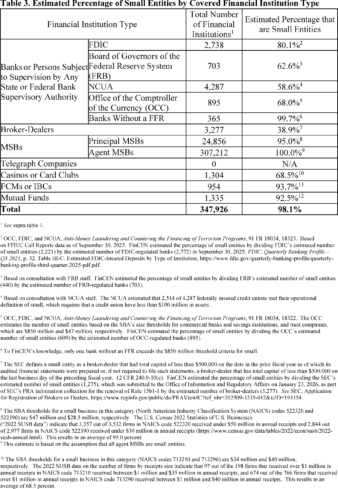
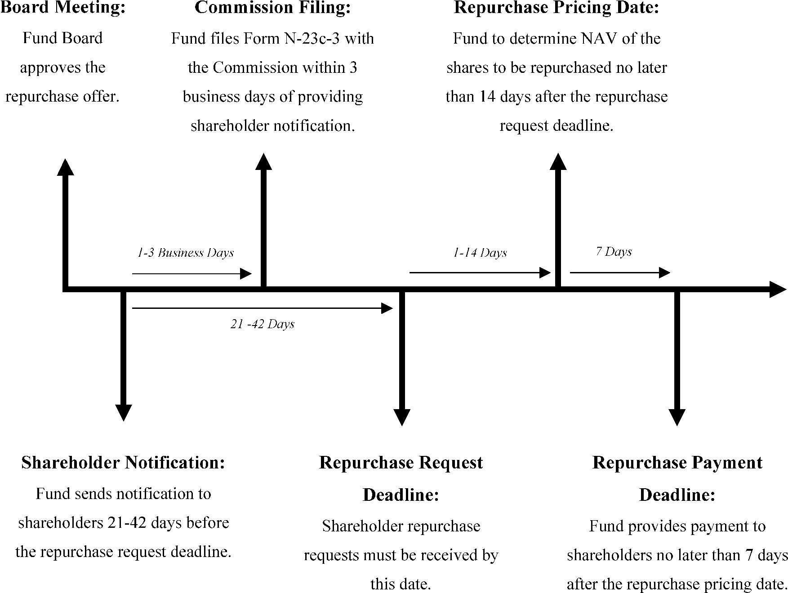
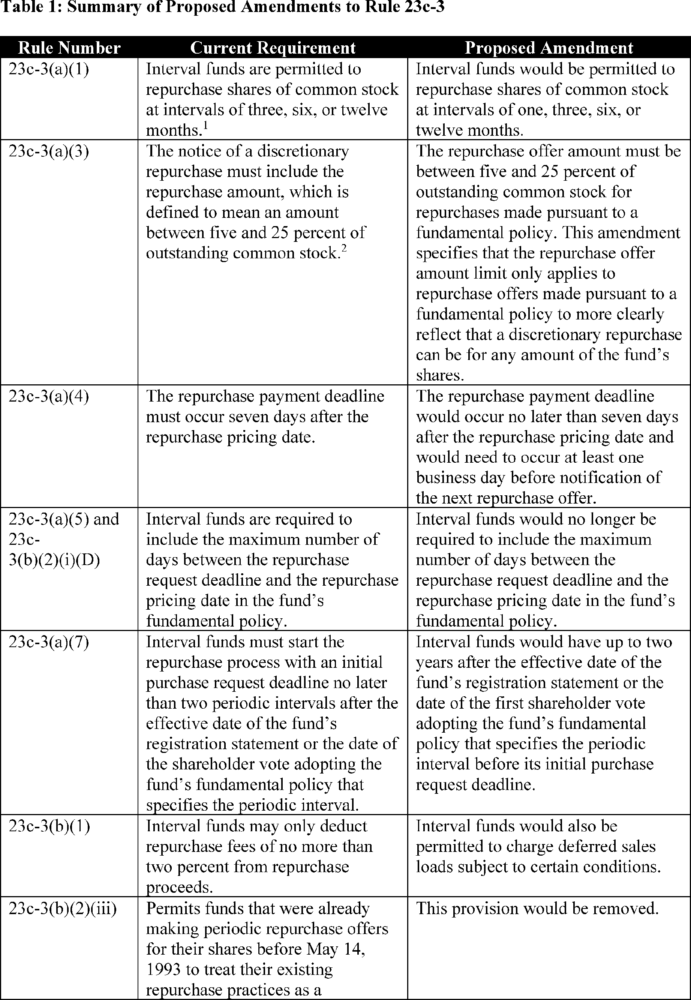

Daily Digest — 2026-10-05
Full observed listing for this day — every item our collectors observed for this publication day, mechanical rules applied, frozen at end of day. This digest is the canonical record.
All items below cite the govinfo package (and granule, where applicable) they summarize. Selection is mechanical; each item states the rule that included it. See the Coverage Statement at the end for a full accounting of what was published, what was summarized, and what was excluded and why.
Day in Review
The digest carries two presidential action entries, both for an executive order titled "Emergency Tax Relief on Diesel Fuel." The order defers diesel fuel excise tax payments through December 31, 2026, and provides penalty relief for related tax obligations. It also directs the Secretary of the Treasury to explore legislation that could eliminate the deferred obligation. A presidential determination published in the Federal Register revokes four determinations from 1985, 1992, 1998 and 2007 that restricted aircraft operations to and from Lebanon, stating the restrictions are no longer necessary.
From the Federal Register, the digest carries 8 rules, 17 proposed rules and 80 notices. The Federal Aviation Administration proposes five amendments to its licensing regulations for commercial space launch and reentry. The Nuclear Regulatory Commission's "Exemptions From Materials Licensing" appears as both a proposed rule and a final rule. The Census Bureau extends the comment period on its proposed decennial census residence criteria to November 2, 2026. The Fish and Wildlife Service finds four species not warranted for listing. FinCEN proposes a special measure concerning transactions involving companies controlled by the A7 Network. Among final rules, the Federal Motor Carrier Safety Administration lengthens automatic emergency relief from 14 to 30 days. The National Marine Fisheries Service reclassifies the rainbow runner as a pelagic fish under the Puerto Rico Fishery Management Plan. The digest also carries 274 agency press releases and 527 district court opinions.
Composed from the summarized items below and the day's mechanical counts; all specifics are cited in their sections.
1. Congressional Floor Activity
No Congressional Record issue was observed on this day. The Record for a day's proceedings is typically published by govinfo the following morning; it appears in the digest for the day it is observed (how our clocks work).
1.1 Senate
No Senate floor items met the selection thresholds. 0 floor granule(s) are accounted for in the Coverage Statement.
1.2 House of Representatives
No House floor items met the selection thresholds. 0 floor granule(s) are accounted for in the Coverage Statement.
1.3 Recorded Votes
No recorded votes were published in this issue of the Congressional Record.
2. Legislation
Source: Congressional Bills (BILLS), text versions published 2026-10-05 to 2026-10-05.
2.1 Counts by Stage
| Stage (bill text version) | Count |
|---|---|
| Introduced (ih/is) | 0 |
| Reported (rh/rs) | 0 |
| Engrossed (eh/es) | 0 |
| Enrolled (enr) | 0 |
| Other versions | 0 |
| Total bill texts published | 0 |
2.2 Bills Listed by Mechanical Rule
Bills below are listed because they matched at least one listing rule; the matching rule is stated per item. All other bill texts are counted above and accounted for in the Coverage Statement.
No bill texts published in this range matched a listing rule; all 0 are accounted for in the Coverage Statement.
3. Federal Register
8 final rules, extending emergency relief from 14 to 30 days and adjusting fisheries quotas, plus updates for nuclear licensing, vessel safety, incarceration communications, and economic benchmarks.
Source: Federal Register (FR), issue of 2026-10-05.
3.1 Counts by Document Type
| Document type | Count |
|---|---|
| Rules | 8 |
| Proposed rules | 17 |
| Notices | 80 |
| Presidential documents | 1 |
| Total FR documents | 106 |
3.2 Rules Published
In plain terms 8 final rules, extending emergency relief from 14 to 30 days and adjusting fisheries quotas, plus updates for nuclear licensing, vessel safety, incarceration communications, and economic benchmarks.
DEPARTMENT OF COMMERCE
- Fisheries of the Caribbean, Gulf of America, and South Atlantic; Puerto Rico Fishery Management Plan; Amendment 4 (2026-20330; 50 CFR Part 622) — NMFS issues regulations to implement Amendment 4 to the Puerto Rico Fishery Management Plan (Puerto Rico FMP), as prepared and submitted by the Caribbean Fishery Management Council (Council). This final rule reclassifies the rainbow runner from a reef fish to a pelagic fish under the Puerto Rico FMP and implements management measures for rainbow runner based on the pelagic fish classification, including sector annual catch targets (ACTs) and accountability measures (AMs). The existing sector-specific annual catch limits (ACLs) for rainbow runner will be retained after the reclassification. The purpose of this final rule and Amendment 4 is to ensure that rainbow runner is managed consistent with its life history characteristics, fishing patterns, and with the Council's management of other pelagic species. Action: Final rule. Dates: This final rule is effective October 5, 2026.
- In plain terms The National Marine Fisheries Service is changing how rainbow runner fish are managed in Puerto Rico, reclassifying them as pelagic fish instead of reef fish.
- Included because: FR-SEL-01 — document type: final rule (all listed)
- Source: FR-2026-10-05 / 2026-20330 (opens in a new tab)
- Fisheries of the Exclusive Economic Zone Off Alaska; Pacific Ocean Perch in the Western Regulatory Area of the Gulf of Alaska (2026-20338; 50 CFR Part 679) — NMFS is prohibiting directed fishing for Pacific ocean perch in the Western Regulatory Area of the Gulf of Alaska (GOA). This action is necessary to prevent exceeding the 2026 total allowable catch of Pacific ocean perch in the Western Regulatory Area of the GOA. Action: Temporary rule; closure. Dates: Effective 1200 hours, Alaska local time (A.l.t.), October 1, 2026, through 2400 hours, A.l.t., December 31, 2026.
- In plain terms The National Marine Fisheries Service is prohibiting commercial fishing for Pacific ocean perch in the western Gulf of Alaska to prevent exceeding the 2026 catch limit.
- Included because: FR-SEL-01 — document type: final rule (all listed)
- Source: FR-2026-10-05 / 2026-20338 (opens in a new tab)
- Fisheries of the Northeastern United States; Summer Flounder Fishery; Quota Transfer From North Carolina to Massachusetts (2026-20356; 50 CFR Part 648) — NMFS announces that the State of North Carolina is transferring a portion of its 2026 commercial summer flounder quota to the Commonwealth of Massachusetts. This adjustment to the 2026 fishing year quota is necessary to comply with the Summer Flounder, Scup, and Black Sea Bass Fishery Management Plan (FMP) quota transfer provisions. This announcement informs the public of the revised 2026 commercial quotas for North Carolina and Massachusetts. Action: Temporary rule; quota transfer. Dates: Effective October 2, 2026, through December 31, 2026.
- In plain terms North Carolina is transferring part of its 2026 summer flounder fishing quota to Massachusetts under rules governing the fishery.
- Included because: FR-SEL-01 — document type: final rule (all listed)
- Source: FR-2026-10-05 / 2026-20356 (opens in a new tab)
DEPARTMENT OF HOMELAND SECURITY
- Special Local Regulation; Allegheny River Mile Marker 20.5-21, Creighton, PA (2026-20324; 33 CFR Part 100) — The Coast Guard is establishing a temporary special local regulation (SLR) on the waters of the Allegheny River from mile marker 20.5 to mile marker 21 in Creighton, PA. This action is necessary to provide for the safety of life on these navigable waters from potential hazards during a paddle boat race on October 10, 2026. This regulation prohibits persons and vessels from entering the regulated area unless specifically authorized by the Captain of the Port Pittsburgh or their designated representative. Action: Temporary final rule. Dates: This rule is effective from 8 a.m. until 4 p.m. on October 10, 2026.
- In plain terms The Coast Guard is temporarily closing a section of the Allegheny River from October 10, 2026, for a paddle boat race unless the Captain of the Port Pittsburgh approves.
- Included because: FR-SEL-01 — document type: final rule (all listed)
- Source: FR-2026-10-05 / 2026-20324 (opens in a new tab)
DEPARTMENT OF HOUSING AND URBAN DEVELOPMENT
- Section 3 Benchmarks for Creating Economic Opportunities for Low- and Very Low-Income Persons and Eligible Businesses (2026-20374; 24 CFR Part 75) — HUD's regulations require that HUD set Section 3 benchmarks by publishing a notification, subject to public comment, in the Federal Register and update the benchmarks no less frequently than once every three years by the same method of notification. This document serves as an update of the 2023 benchmark Notice and requests public comment about the Section 3 benchmark goals. Action: Notification of benchmark updates and request for comments. Dates: Effective November 4, 2026. The public comment period for the Notice published in the Federal Register is December 4, 2026.
- In plain terms HUD is updating its benchmarks for creating economic opportunities for low-income people and businesses under Section 3 and requesting public comment.
- Included because: FR-SEL-01 — document type: final rule (all listed)
- Source: FR-2026-10-05 / 2026-20374 (opens in a new tab)
DEPARTMENT OF TRANSPORTATION
- Clarification to the Applicability of Emergency Exemptions; Response to Petitions for Reconsideration (2026-20325; 49 CFR Part 390) — FMCSA amends its emergency declaration regulations to revise from 14 days to 30 days the length of the relief automatically triggered subsequent to a regional declaration of emergency by a Governor of a State, the Governor's authorized representative, or FMCSA. This action is in response to several petitions for reconsideration received after publication of a final rule in October 2023. Action: Final rule. Dates: Effective October 5, 2026. Petitions for reconsideration of this final rule must be submitted to the FMCSA Administrator no later than November 4, 2026.
- In plain terms The Federal Motor Carrier Safety Administration is extending from 14 to 30 days the automatic relief that follows a state governor's emergency declaration.
- Included because: FR-SEL-01 — document type: final rule (all listed)
- Source: FR-2026-10-05 / 2026-20325 (opens in a new tab)
FEDERAL COMMUNICATIONS COMMISSION
- Wireline Competition Bureau and Office of Economics and Analytics Adopt 2026 Mandatory Data Collection for Incarcerated People's Communications Services (2026-20362; 47 CFR Part 64) — In this Order, the Wireline Competition Bureau (WCB) and the Office of Economics and Analytics (OEA) (collectively, WCB/OEA) adopt instructions, Word and Excel templates, and a certification form to implement the 2026 incarcerated people's communications services (IPCS) Mandatory Data Collection. Action: Final action. Dates: Compliance date: Providers must file their submissions by December 21, 2026.
- In plain terms The Federal Communications Commission is adopting forms and templates for collecting data on communications services available to incarcerated people in 2026.
- Included because: FR-SEL-01 — document type: final rule (all listed)
- Source: FR-2026-10-05 / 2026-20362 (opens in a new tab)
NUCLEAR REGULATORY COMMISSION
- Exemptions From Materials Licensing (2026-20336; 10 CFR Parts 20, 30, 40, and 70) — The U.S. Nuclear Regulatory Commission (NRC) is amending several regulations for byproduct, source, and special nuclear material by expanding how certain nuclear material can be safely used without a license. This action is responsive to the NRC's mission to enable safe, efficient, and reliable licensing and consistent with several Executive orders. These changes are deregulatory in nature, eliminating the need to obtain licenses for certain materials uses and quantities. Action: Direct final rule. Dates: This direct final rule is effective December 21, 2026, unless significant adverse comments are received by November 4, 2026. If this direct final rule is withdrawn as a result of such comments, timely notice of the withdrawal will be published in the Federal Register . Comments received on this direct final rule will also be considered to be comments on a companion proposed rule published in the Proposed Rules section of this issue of the Federal Register .
- In plain terms The Nuclear Regulatory Commission is removing the requirement to obtain licenses for certain nuclear materials uses and quantities.
- Included because: FR-SEL-01 — document type: final rule (all listed)
- Source: FR-2026-10-05 / 2026-20336 (opens in a new tab)
3.3 Proposed Rules Published
In plain terms 17 proposed rules, including lithium-battery safety standards and wildlife findings, plus updates for federal procurement, census, child welfare, nuclear licensing, aircraft operations, and commercial space.
CONSUMER PRODUCT SAFETY COMMISSION
- Safety Standard for Lithium-Ion Batteries Used in Micromobility Products and Electrical Systems of Micromobility Products Containing Such Batteries (2026-20296; 16 CFR Parts 1112 and 1265) — The Consumer Product Safety Commission (Commission or CPSC) is providing an opportunity for interested parties to present oral comments on the notice of proposed rulemaking (NPRM) the Commission issued for a safety standard for lithium-ion batteries. Oral presentations must be limited to matters within the scope of the NPRM. Any oral comments will become part of the rulemaking record. Action: Announcement of opportunity for oral presentation of comments. Dates: The virtual meeting will begin at 10 a.m. Eastern time on October 21, 2026. Any individual interested in making an oral presentation must submit a request to make an oral presentation to the Office of the Secretary, along with the written text of the oral presentation. Request must be received no later than 5 p.m. Eastern time on October 15, 2026. All attendees planning to present must pre-register no later than 5 p.m. Eastern time on October 15, 2026, at the website in ADDRESSES .
- In plain terms The Consumer Product Safety Commission is accepting oral comments on a proposed safety standard for lithium-ion batteries used in products like e-scooters and e-bikes.
- Included because: FR-SEL-02 — document type: proposed rule (all listed)
- Source: FR-2026-10-05 / 2026-20296 (opens in a new tab)
DEPARTMENT OF COMMERCE
- Decennial Census of the Population of Americans; Proposed Residence Criteria and Proposed Regulations for Demographic Questions; Extension of Comment Period (2026-20328; 15 CFR Parts 60 and 70) — The Census Bureau is extending the comment period for the proposed rule entitled, “Decennial Census of the Population of Americans; Proposed Residence Criteria and Proposed Regulations for Demographic Questions,” that was published in the Federal Register on September 10, 2026. The proposed rule's comment period, which would have ended on October 13, 2026, is extended until November 2, 2026. Action: Proposed rule; extension of comment period. Dates: Submit comments on or before November 2, 2026.
- In plain terms The Census Bureau is extending the public comment deadline for its proposed census residence and demographic questions rule to November 2, 2026.
- Included because: FR-SEL-02 — document type: proposed rule (all listed)
- Source: FR-2026-10-05 / 2026-20328 (opens in a new tab)
DEPARTMENT OF HEALTH AND HUMAN SERVICES
- Reforming Federal Reporting and Assessments in Child Welfare (2026-20329; 45 CFR Part 1355 and 1357) — ACF proposes to remove regulations that implement title IV-B of the Social Security Act (the Act) because they are outdated and refer to dates that have passed, have been superseded by subsequent amendments to the Act, duplicate or restate requirements already in title IV-B of the Act or other Federal law, and/or impose administrative and reporting requirements on agencies that do not meaningfully support Federal program oversight and administration of title IV-B programs. Four of these regulatory requirements are redesignated to the regulations addressing titles IV-E and IV-B plan requirements. ACF also proposes to remove the regulation that articulates the principles of child and family services reviews because it does not prescribe any requirements that states and tribes must follow, but rather provides unenforceable recommendations, and to remove redundant cross-references. Action: Notice of proposed rulemaking. Dates: Comments on this proposed rule must be received by November 4, 2026.
- In plain terms The Administration for Children and Families is proposing to remove outdated federal child welfare regulations that no longer serve a meaningful purpose.
- Included because: FR-SEL-02 — document type: proposed rule (all listed)
- Source: FR-2026-10-05 / 2026-20329 (opens in a new tab)
DEPARTMENT OF THE INTERIOR
- Endangered and Threatened Wildlife and Plants; Four Species Not Warranted for Listing as Endangered or Threatened Species (2026-20315; 50 CFR Part 17) — We, the U.S. Fish and Wildlife Service (Service), announce findings that four species are not warranted for listing as endangered or threatened species under the Endangered Species Act of 1973, as amended (ESA or Act). After a thorough review of the best scientific and commercial data available, we find that it is not warranted at this time to list the Blueridge springfly ( Remenus kirchneri ), lobed roachfly ( Tallaperla lobata ), Mojave poppy bee ( Perdita meconis ), and streamside salamander ( Ambystoma barbouri ). However, we ask the public to submit to us at any time any new information relevant to the status of any of the species mentioned above or their habitats. Action: Notification of findings. Dates: The findings in this document were made on October 5, 2026.
- In plain terms The Fish and Wildlife Service determined the blueridge springfly, lobed roachfly, Mojave poppy bee, and streamside salamander do not need protection as endangered or threatened species.
- Included because: FR-SEL-02 — document type: proposed rule (all listed)
- Source: FR-2026-10-05 / 2026-20315 (opens in a new tab)
DEPARTMENT OF THE TREASURY
- Proposal of Special Measure Prohibiting the Transmittal of Funds Regarding Transactions Involving the A7 Network's Sub-Agents (2026-20371; 31 CFR Part 1010) — FinCEN is issuing a finding and notice of proposed rulemaking, pursuant to section 9714(a) of the Combating Russian Money Laundering Act (Public Law 116-283), as amended by section 6106(b) of the National Defense Authorization Act for Fiscal Year 2022 (Public Law 117-81), finding transactions involving any company operating outside of the United States that is controlled by the A7 Network, a sanctions evasion and money laundering service with ties to Russia, leveraged by a wide range of illicit actors, including Iran and its terrorist proxies, to be a class of transactions of primary money laundering concern in connection with Russian illicit finance and proposing the imposition of a prohibition on certain transmittals of funds, by any covered financial institution, involving that class of transactions. Action: Notice of proposed rulemaking. Dates: Written comments on the notice of proposed rulemaking must be submitted on or before November 4, 2026.
- In plain terms The Financial Crimes Enforcement Network is proposing to prohibit financial institutions from sending money involving the A7 Network, which facilitates money laundering and sanctions evasion.
- Included because: FR-SEL-02 — document type: proposed rule (all listed)
- Source: FR-2026-10-05 / 2026-20371 (opens in a new tab)

Source graphic 1 of 1 from 2026-20371.
DEPARTMENT OF TRANSPORTATION
- Special Conditions: Honda Aircraft Company LLC Model HA-480 Airplane; High Altitude Operation (2026-20350; 14 CFR Part 23) — This action proposes special conditions for the Honda Aircraft Company LLC (Honda) Model HA-480 airplane. This airplane will have a novel or unusual design feature when compared to the state of technology envisioned in the airworthiness standards for normal category airplanes. This airplane will have design features associated with high altitude operations up to 47,000 feet. The applicable airworthiness regulations do not contain adequate or appropriate safety standards for this design feature. These proposed special conditions contain the additional safety standards that the Administrator considers necessary to establish a level of safety equivalent to that established by the existing airworthiness standards. Action: Notice of proposed special conditions. Dates: Send comments on or before November 19, 2026.
- In plain terms The Federal Aviation Administration is proposing safety requirements for the Honda HA-480 airplane, which will operate at altitudes up to 47,000 feet.
- Included because: FR-SEL-02 — document type: proposed rule (all listed)
- Source: FR-2026-10-05 / 2026-20350 (opens in a new tab)
- Amendment of Domestic Very High Frequency Omnidirectional Range (VOR) Federal Airways V-16, V-184, and Revocation of V-284 and V-577; Eastern United States (2026-20372; 14 CFR Part 71) — This action proposes to amend domestic Very High Frequency Omnidirectional Range (VOR) Federal Airways V-16, V-184, and revoke V-284 and V-577 in the eastern United States. The FAA is proposing these actions due to the planned decommissioning of the Cedar Lake, NJ (VCN), VOR/Distance Measuring Equipment (DME). Action: Notice of proposed rulemaking (NPRM). Dates: Comments must be received on or before November 19, 2026.
- In plain terms The Federal Aviation Administration is proposing to change flight navigation airways in the eastern United States because a navigation station in New Jersey is being closed.
- Included because: FR-SEL-02 — document type: proposed rule (all listed)
- Source: FR-2026-10-05 / 2026-20372 (opens in a new tab)
- Simplifying Physical Containment Requirements (2026-20386; 14 CFR Part 401 and 450) — FAA proposes to amend its commercial space launch and reentry licensing regulations to streamline the licensing process and reduce regulatory burden on operators. Specifically, FAA proposes to relieve the burden by specifying that, when using physical containment as a hazard control strategy, operators do not need to develop flight hazard areas in accordance with FAA's existing flight hazard area analysis requirements. Action: Notice of proposed rulemaking (NPRM). Dates: Send comments on or before November 4, 2026.
- In plain terms The Federal Aviation Administration is proposing to simplify regulations for commercial space launches by allowing companies using physical barriers to skip certain hazard area analyses.
- Included because: FR-SEL-02 — document type: proposed rule (all listed)
- Source: FR-2026-10-05 / 2026-20386 (opens in a new tab)
- Digital Modernization for Licensing Electronic Application Submissions (2026-20387; 14 CFR Parts 401, 404, 413, and 414) — FAA proposes to amend its commercial space launch and reentry licensing regulations to allow for submission of license and permit applications and requests for waivers, alternative time frames, and safety element approvals through additional electronic methods. Action: Notice of proposed rulemaking (NPRM). Dates: Send comments on or before November 4, 2026.
- In plain terms The Federal Aviation Administration is proposing to allow commercial space companies to submit licensing applications and requests through more electronic methods.
- Included because: FR-SEL-02 — document type: proposed rule (all listed)
- Source: FR-2026-10-05 / 2026-20387 (opens in a new tab)
- Streamlining Flight Safety Analysis Methodology Means of Compliance (2026-20388; 14 CFR Part 450) — FAA proposes to amend its commercial space launch and reentry licensing regulations to streamline the licensing process. Specifically, FAA proposes to alleviate regulatory burden for license applicants by consolidating information required for an operator's flight safety analysis. Action: Notice of proposed rulemaking (NPRM). Dates: Send comments on or before November 4, 2026.
- In plain terms The Federal Aviation Administration is proposing to reduce paperwork for commercial space launch licensing by consolidating flight safety analysis requirements.
- Included because: FR-SEL-02 — document type: proposed rule (all listed)
- Source: FR-2026-10-05 / 2026-20388 (opens in a new tab)
- Lightning Hazard Mitigation Burden-Reducing Exception (2026-20391; 14 CFR Part 450) — FAA proposes to amend its commercial space launch and reentry licensing regulations to streamline the licensing process and reduce regulatory burden for license applicants. Specifically, FAA proposes to add an exception for compliance with lightning hazard mitigation requirements for certain licensed launch and reentry operations. Action: Notice of proposed rulemaking (NPRM). Dates: Send comments on or before November 4, 2026.
- In plain terms The Federal Aviation Administration is proposing an exception to lightning safety requirements for some commercial space launch and reentry operations.
- Included because: FR-SEL-02 — document type: proposed rule (all listed)
- Source: FR-2026-10-05 / 2026-20391 (opens in a new tab)
- Overpressure Blast Effects Analysis Burden Reducing Clarification (2026-20392; 14 CFR Part 450) — FAA proposes to amend its commercial space launch and reentry licensing regulations to streamline the licensing process and reduce regulatory burden for license applicants. Specifically, FAA proposes to amend the regulations to state that a far-field overpressure blast effects analysis required for license applicants does not need to account for members of the public in hypothetical locations. Action: Notice of proposed rulemaking (NPRM). Dates: Send comments on or before November 4, 2026.
- In plain terms The Federal Aviation Administration is proposing to clarify that blast-safety analyses for space launches do not need to account for the public in hypothetical locations.
- Included because: FR-SEL-02 — document type: proposed rule (all listed)
- Source: FR-2026-10-05 / 2026-20392 (opens in a new tab)
- Airworthiness Directives; DG Aviation GmbH (Type Certificate Previously Held by DG Flugzeugbau GmbH) Gliders (2026-20393; 14 CFR Part 39) — The FAA proposes to supersede Airworthiness Directive (AD) 2025-13-08, which applies to all DG Aviation GmbH Model DG-1000T gliders. AD 2025-13-08 requires revising the glider flight manual and installing “Motor INOP” placards to prohibit operation with the powerplant. Since issuance of AD 2025-13-08, a design improvement to the propeller adapter ring has been developed that is considered terminating action for the operational prohibition of AD 2025-13-08. This proposed AD would retain the requirement to revise the flight manual, would provide an optional terminating action for the retained actions by incorporating a specified modification, would allow removal of the “Motor INOP” placards following accomplishment of that optional terminating action, and would require removal, inspection, and reinstallation of the propeller adapter disk, including installation of safety pins. This proposed AD would also prohibit the installation of affected propeller adapter rings. The FAA is proposing this AD to address the unsafe condition on these products. Action: Notice of proposed rulemaking (NPRM). Dates: The FAA must receive comments on this proposed AD by November 19, 2026.
- In plain terms The Federal Aviation Administration is proposing updated safety requirements for DG-1000T gliders that allow operators to install a new propeller adapter ring as an alternative to disabling the engine.
- Included because: FR-SEL-02 — document type: proposed rule (all listed)
- Source: FR-2026-10-05 / 2026-20393 (opens in a new tab)
- Airworthiness Directives; Airbus Helicopters (2026-20411; 14 CFR Part 39) — The FAA proposes to supersede Airworthiness Directive (AD) 2026-12-09, which applies to all Airbus Helicopters Model AS350B, AS350BA, AS350B1, and AS350D helicopters. AD 2026-12-09 requires revising the airworthiness limitations section (ALS) of the existing maintenance manual (MM) or instructions for continued airworthiness (ICA) and the existing approved maintenance or inspection program, as applicable. Since the FAA issued AD 2026-12-09, a determination was made that new and more restrictive airworthiness limitations and maintenance tasks are necessary. This proposed AD would require incorporating these airworthiness limitations into the ALS of the existing MM or ICA and the existing approved maintenance or inspection program, as applicable. The FAA is proposing this AD to address the unsafe condition on these products. Action: Notice of proposed rulemaking (NPRM). Dates: The FAA must receive comments on this NPRM by November 19, 2026.
- In plain terms The Federal Aviation Administration is proposing stricter maintenance requirements for Airbus AS350 helicopters based on new safety limitations identified since the previous directive.
- Included because: FR-SEL-02 — document type: proposed rule (all listed)
- Source: FR-2026-10-05 / 2026-20411 (opens in a new tab)
GENERAL SERVICES ADMINISTRATION
- General Services Administration Acquisition Regulation; GSAR Implementation of Executive Order 14275, Acquisition of Utility Services (2026-20317; 48 CFR Parts 541 and 552) — GSA is proposing to amend the General Services Administration Acquisition Regulation (GSAR) part 541 which outlines procedures and guidance for the procurement of utility services. GSA guidance does not apply to agencies using their special authorities listed in Federal Acquisition Regulation (FAR) section 41.103(a)(2) and (3). This proposed rule would align the GSAR with the FAR Council's proposed rule for FAR part 41. Action: Proposed rule. Dates: Interested parties should submit written comments to the Regulatory Secretariat Division at the address shown below on or before November 4, 2026 to be considered in the formation of the final rule.
- In plain terms The General Services Administration is proposing changes to how agencies buy utility services to align with federal purchasing rules.
- Included because: FR-SEL-02 — document type: proposed rule (all listed)
- Source: FR-2026-10-05 / 2026-20317 (opens in a new tab)
NUCLEAR REGULATORY COMMISSION
- Exemptions From Materials Licensing (2026-20335; 10 CFR Parts 20, 30, 40, and 70) — The U.S. Nuclear Regulatory Commission (NRC) is proposing to amend several regulations for byproduct, source, and special nuclear material by expanding how certain nuclear material can be safely used without a license. This proposed action would be responsive to the NRC's mission to enable safe, efficient, and reliable licensing and consistent with several Executive orders. These changes would be deregulatory in nature, eliminating the need to obtain licenses for certain materials uses and quantities. Action: Proposed rule. Dates: Comments must be submitted electronically using https://www.regulations.gov no later than 11:59 p.m. midnight eastern time on November 4, 2026.
- In plain terms The Nuclear Regulatory Commission is proposing to let certain nuclear materials be used without a license, eliminating licensing requirements for specific uses and quantities.
- Included because: FR-SEL-02 — document type: proposed rule (all listed)
- Source: FR-2026-10-05 / 2026-20335 (opens in a new tab)
SECURITIES AND EXCHANGE COMMISSION
- Interval Fund Modernization; Expansion of Multiple Share Class to Registered Closed-End Management Investment Companies and Business Development Companies (2026-20360; 17 CFR Parts 239, 249, 270, and 274) — The Securities and Exchange Commission (the “Commission”) is proposing to amend the rule under the Investment Company Act of 1940 that allows registered closed-end management investment companies and business development companies (collectively, “regulated closed-end funds”) to make repurchase offers to shareholders at net asset value (“NAV”) at periodic intervals pursuant to a fundamental policy (“interval funds”). The proposed amendments would increase flexibility in the rule's repurchase offer framework and modify the rule's liquidity management requirements. The proposal is designed to modernize the framework applicable to these funds by allowing them to better match the liquidity profile of the assets in which they invest, while continuing to provide the operational infrastructure and investor protection of the Investment Company Act of 1940. We also propose amending certain rules that would permit regulated closed-end funds to issue multiple share classes, consistent with routine exemptive relief provided to these funds, and to require certain related disclosure in funds' prospectuses. [official summary truncated; see source] Action: Proposed rule. Dates: This r was published in the Federal Register on October 5, 2026. Comments should be received on or before December 4, 2026.
- In plain terms The Securities and Exchange Commission is proposing to modernize rules for closed-end investment funds to allow more flexible repurchase offers and multiple share classes.
- Included because: FR-SEL-02 — document type: proposed rule (all listed)
- Source: FR-2026-10-05 / 2026-20360 (opens in a new tab)

Source graphic 1 of 34 from 2026-20360.
Source graphic 2 of 34 from 2026-20360.- Graphics not rendered here: 32 of 34 — see the source PDF (opens in a new tab).
3.4 Notices and Presidential Documents
In plain terms The President revoked four Presidential Determinations restricting aircraft operations to and from Lebanon for security reasons, finding such restrictions no longer necessary.
Notices are summarized only when they match a listing rule; all are counted in 3.1 and in the Coverage Statement. Presidential documents in the FR are always listed.
- Presidential Determination on the Revocation of Presidential Determinations Related to Lebanon (2026-20439) — The President revoked four Presidential Determinations issued in 1985, 1992, 1998, and 2007 that restricted aircraft operations to and from Lebanon for security purposes. The determination states these restrictions are no longer necessary to ensure the security of aircraft against unlawful seizure. The order directs immediate implementation and publication in the Federal Register.
- In plain terms The President canceled four security orders from 1985, 1992, 1998, and 2007 that restricted aircraft flights to and from Lebanon, saying they are no longer needed to prevent hijackings.
- Included because: FR-SEL-03 — presidential document (all listed)
- Source: FR-2026-10-05 / 2026-20439 (opens in a new tab)
4. Enacted Laws
Source: Public and Private Laws (PLAW) published 2026-10-05.
No laws were published in this range.
5. Judicial Activity
Source: United States Courts Opinions (USCOURTS): opinions observed 2026-10-05 by our collector; each opinion states its own issue date beside its listing (how our clocks work).
Completeness disclosure (standing): USCOURTS carries opinions from approximately 140 participating appellate, district, bankruptcy, and national federal courts. Unlike the Congressional Record and the Federal Register, which are the complete official record of their branches, USCOURTS is participation-based and is NOT the complete federal judicial record. Courts post opinions with delay — typically over several days — so a day's digest carries the opinions that became available that day, whatever date each was issued.
5.1 Appellate and National Court Opinions
Appellate and national court opinions are summarized; district and bankruptcy opinions are counted in 5.2 and in the Coverage Statement.
No appellate or national court opinions matched a listing rule for this date; all opinions are counted in 5.2 and accounted for in the Coverage Statement.
5.2 Counts by Court Category
| Court category | Opinions |
|---|---|
| Appellate | 0 |
| District | 527 |
| Bankruptcy | 0 |
| National | 0 |
| Total opinions extracted | 527 |
Archive-window disclosure (rule USCOURTS-FETCH-01): 34216 USCOURTS package(s) have been listed in delta syncs but fell outside the 7-day archive window and were not fetched (global running count across all syncs, not limited to this date).
6. Agency Announcements
Official press releases and statements the agencies themselves date on 2026-10-05 (sources listed in the source guide). These are the agencies' own announcements — official advocacy, quoted and attributed, not findings of this digest. Agency web content can be edited or removed without notice; captures and hashes are preserved per the provenance policy.
Agricultural Marketing Service (email)
- NOP GLOBAL INTEGRITY Back Online — dated 2026-10-05 by the agency
- Included because: AGENCYPR-SEL-01 — official agency release dated this day by the agency (all such releases from active sources are listed; titles only in the pilot)
- Source: agency email bulletin to this project's subscription, captured and DKIM-verified (the bulletin named no canonical page)
- NOP GLOBAL INTEGRITY System Outage — dated 2026-10-05 by the agency
- Included because: AGENCYPR-SEL-01 — official agency release dated this day by the agency (all such releases from active sources are listed; titles only in the pilot)
- Source: agency email bulletin to this project's subscription, captured and DKIM-verified (the bulletin named no canonical page)
Animal and Plant Health Inspection Service (email)
- APHIS Expands Box Tree Moth (Cydalima perspectalis) Quarantine in Maryland — dated 2026-10-05 by the agency
- Included because: AGENCYPR-SEL-01 — official agency release dated this day by the agency (all such releases from active sources are listed; titles only in the pilot)
- Source: agency email bulletin to this project's subscription, captured and DKIM-verified (the bulletin named no canonical page)
- APHIS Removes Part of Tate Township, Clermont County, Ohio from the Asian Longhorned Beetle (Anoplophora glabripennis) Quarantined Area — dated 2026-10-05 by the agency
- Included because: AGENCYPR-SEL-01 — official agency release dated this day by the agency (all such releases from active sources are listed; titles only in the pilot)
- Source: agency email bulletin to this project's subscription, captured and DKIM-verified (the bulletin named no canonical page)
- APHIS Removes Shrewsbury, Massachusetts from the Asian Longhorned Beetle (Anoplophora glabripennis) Quarantined Area — dated 2026-10-05 by the agency
- Included because: AGENCYPR-SEL-01 — official agency release dated this day by the agency (all such releases from active sources are listed; titles only in the pilot)
- Source: agency email bulletin to this project's subscription, captured and DKIM-verified (the bulletin named no canonical page)
Bureau of Transportation Statistics (email)
- U.S. Airlines’ August 2026 Aviation Fuel Cost up 4.8%, Consumption down 4.4%, and Fuel Cost per Gallon up 9.5% from July 2026 — dated 2026-10-05 by the agency
- Included because: AGENCYPR-SEL-01 — official agency release dated this day by the agency (all such releases from active sources are listed; titles only in the pilot)
- Source: agency email bulletin to this project's subscription, captured and DKIM-verified (the bulletin named no canonical page)
Census Bureau (email)
- Data.census.gov Newsletter – October 2026 — dated 2026-10-05 by the agency
- Included because: AGENCYPR-SEL-01 — official agency release dated this day by the agency (all such releases from active sources are listed; titles only in the pilot)
- Source: agency email bulletin to this project's subscription, captured and DKIM-verified (the bulletin named no canonical page)
- 📅 This Week: Fall Fun With Census Bureau Data 🍂 — dated 2026-10-05 by the agency
- Included because: AGENCYPR-SEL-01 — official agency release dated this day by the agency (all such releases from active sources are listed; titles only in the pilot)
- Source: agency email bulletin to this project's subscription, captured and DKIM-verified (the bulletin named no canonical page)
CFTC Press Releases
- CFTC Issues No-Action Letter for DCMs Regarding Converting Existing Perpetual-Style Broad-Based Security Index Futures into True Perpetual Futures (opens in a new tab) — dated 2026-10-05 by the agency
- Included because: AGENCYPR-SEL-01 — official agency release dated this day by the agency (all such releases from active sources are listed; titles only in the pilot)
- CFTC Seeks Public Comment on Advanced Notice of Proposed Rulemaking Relating to Regulation Crypto Asset Transactions and Regulation Crypto Asset Markets (opens in a new tab) — dated 2026-10-05 by the agency
- Included because: AGENCYPR-SEL-01 — official agency release dated this day by the agency (all such releases from active sources are listed; titles only in the pilot)
DEA Updates (email)
- You're Invited: DEA Detroit Hosts Family Summit — dated 2026-10-05 by the agency
- Included because: AGENCYPR-SEL-01 — official agency release dated this day by the agency (all such releases from active sources are listed; titles only in the pilot)
- Source: agency email bulletin to this project's subscription, captured and DKIM-verified (the bulletin named no canonical page)
Defense News Releases
- Navy Commissions USS Ted Stevens, Honoring Senator's Defense Advocacy (opens in a new tab) — dated 2026-10-05 by the agency
- Included because: AGENCYPR-SEL-01 — official agency release dated this day by the agency (all such releases from active sources are listed; titles only in the pilot)
DHS News Releases
- DHS Highlights Worst Illegal Aliens Arrested or Convicted in Nebraska (opens in a new tab) — dated 2026-10-05 by the agency
- Included because: AGENCYPR-SEL-01 — official agency release dated this day by the agency (all such releases from active sources are listed; titles only in the pilot)
- ICE Lodges Detainer for Illegal Alien Charged with Sexually Assaulting a Minor in Tennessee (opens in a new tab) — dated 2026-10-05 by the agency
- Included because: AGENCYPR-SEL-01 — official agency release dated this day by the agency (all such releases from active sources are listed; titles only in the pilot)
- Report: Biden Administration Took Little Action on Alien Overstays, Including Those Deemed Threats to National Security (opens in a new tab) — dated 2026-10-05 by the agency
- Included because: AGENCYPR-SEL-01 — official agency release dated this day by the agency (all such releases from active sources are listed; titles only in the pilot)
- Secretary Mullin Observes Deportation Flight Removing Dangerous Illegal Aliens to El Salvador (opens in a new tab) — dated 2026-10-05 by the agency
- Included because: AGENCYPR-SEL-01 — official agency release dated this day by the agency (all such releases from active sources are listed; titles only in the pilot)
- WORST OF THE WORST: ICE Arrests Murderers, Pedophiles, Sexual Assailants, and Drug Traffickers Over the Weekend (opens in a new tab) — dated 2026-10-05 by the agency
- Included because: AGENCYPR-SEL-01 — official agency release dated this day by the agency (all such releases from active sources are listed; titles only in the pilot)
DOE Office of Indian Energy (email)
- Webinar: How-To Guide to Navigate the Complex Landscape of Tribal Energy Projects — dated 2026-10-05 by the agency
- Included because: AGENCYPR-SEL-01 — official agency release dated this day by the agency (all such releases from active sources are listed; titles only in the pilot)
- Source: agency email bulletin to this project's subscription, captured and DKIM-verified (the bulletin named no canonical page)
EEOC Newsroom
- El Dorado Furniture Corporation to Pay $1.3 Million to Settle National Origin Discrimination Charge (opens in a new tab) — dated 2026-10-05 by the agency
- Included because: AGENCYPR-SEL-01 — official agency release dated this day by the agency (all such releases from active sources are listed; titles only in the pilot)
Energy Press Releases
- Energy Department Announces $4.2 Billion Investment to Boost Nuclear Power and Help Lower Energy Costs in Pennsylvania and Ohio (opens in a new tab) — dated 2026-10-05 by the agency
- Included because: AGENCYPR-SEL-01 — official agency release dated this day by the agency (all such releases from active sources are listed; titles only in the pilot)
- Energy Department Announces Alaska Railbelt Transmission Project to Receive Defense Production Act Funding, Securing Alaska Military Installations and Local Communities (opens in a new tab) — dated 2026-10-05 by the agency
- Included because: AGENCYPR-SEL-01 — official agency release dated this day by the agency (all such releases from active sources are listed; titles only in the pilot)
FAA Updates (email)
- FAA Advisory Circulars Update Notification — dated 2026-10-05 by the agency
- Included because: AGENCYPR-SEL-01 — official agency release dated this day by the agency (all such releases from active sources are listed; titles only in the pilot)
- Source: agency email bulletin to this project's subscription, captured and DKIM-verified (the bulletin named no canonical page)
- FAA Advisory Circulars Update Notification — dated 2026-10-05 by the agency
- Included because: AGENCYPR-SEL-01 — official agency release dated this day by the agency (all such releases from active sources are listed; titles only in the pilot)
- Source: agency email bulletin to this project's subscription, captured and DKIM-verified (the bulletin named no canonical page)
- FAA Advisory Circulars Update Notification — dated 2026-10-05 by the agency
- Included because: AGENCYPR-SEL-01 — official agency release dated this day by the agency (all such releases from active sources are listed; titles only in the pilot)
- Source: agency email bulletin to this project's subscription, captured and DKIM-verified (the bulletin named no canonical page)
- FAA Advisory Circulars Update Notification — dated 2026-10-05 by the agency
- Included because: AGENCYPR-SEL-01 — official agency release dated this day by the agency (all such releases from active sources are listed; titles only in the pilot)
- Source: agency email bulletin to this project's subscription, captured and DKIM-verified (the bulletin named no canonical page)
- FAA Advisory Circulars Update Notification — dated 2026-10-05 by the agency
- Included because: AGENCYPR-SEL-01 — official agency release dated this day by the agency (all such releases from active sources are listed; titles only in the pilot)
- Source: agency email bulletin to this project's subscription, captured and DKIM-verified (the bulletin named no canonical page)
- FAA Orders & Notices Update Notification — dated 2026-10-05 by the agency
- Included because: AGENCYPR-SEL-01 — official agency release dated this day by the agency (all such releases from active sources are listed; titles only in the pilot)
- Source: agency email bulletin to this project's subscription, captured and DKIM-verified (the bulletin named no canonical page)
- FAA Orders & Notices Update Notification — dated 2026-10-05 by the agency
- Included because: AGENCYPR-SEL-01 — official agency release dated this day by the agency (all such releases from active sources are listed; titles only in the pilot)
- Source: agency email bulletin to this project's subscription, captured and DKIM-verified (the bulletin named no canonical page)
- FAA Orders & Notices Update Notification — dated 2026-10-05 by the agency
- Included because: AGENCYPR-SEL-01 — official agency release dated this day by the agency (all such releases from active sources are listed; titles only in the pilot)
- Source: agency email bulletin to this project's subscription, captured and DKIM-verified (the bulletin named no canonical page)
- FAA Orders & Notices Update Notification — dated 2026-10-05 by the agency
- Included because: AGENCYPR-SEL-01 — official agency release dated this day by the agency (all such releases from active sources are listed; titles only in the pilot)
- Source: agency email bulletin to this project's subscription, captured and DKIM-verified (the bulletin named no canonical page)
- FAA Orders & Notices Update Notification — dated 2026-10-05 by the agency
- Included because: AGENCYPR-SEL-01 — official agency release dated this day by the agency (all such releases from active sources are listed; titles only in the pilot)
- Source: agency email bulletin to this project's subscription, captured and DKIM-verified (the bulletin named no canonical page)
- FAA Orders & Notices Update Notification — dated 2026-10-05 by the agency
- Included because: AGENCYPR-SEL-01 — official agency release dated this day by the agency (all such releases from active sources are listed; titles only in the pilot)
- Source: agency email bulletin to this project's subscription, captured and DKIM-verified (the bulletin named no canonical page)
FDA Email Updates (email)
- EAK Distribution LLC Recalls HOME GROWN Green Sprouting Calabrese Broccoli Seeds, 8 oz, Heirloom Because of Possible Health Risk (opens in a new tab) — dated 2026-10-05 by the agency
- Included because: AGENCYPR-SEL-01 — official agency release dated this day by the agency (all such releases from active sources are listed; titles only in the pilot)
- Source: agency email bulletin to this project's subscription, captured and DKIM-verified
- FDA MedWatch - IV Tubing Set Correction: ICU Medical Updates Use Instructions for IV Tubing Sets — dated 2026-10-05 by the agency
- Included because: AGENCYPR-SEL-01 — official agency release dated this day by the agency (all such releases from active sources are listed; titles only in the pilot)
- Source: agency email bulletin to this project's subscription, captured and DKIM-verified (the bulletin named no canonical page)
- FDA MedWatch - Infusion Set Recall: BD and CareFusion 303, Inc. Remove BD Alaris Pump Infusion Sets — dated 2026-10-05 by the agency
- Included because: AGENCYPR-SEL-01 — official agency release dated this day by the agency (all such releases from active sources are listed; titles only in the pilot)
- Source: agency email bulletin to this project's subscription, captured and DKIM-verified (the bulletin named no canonical page)
- Flowers Foods Issues Recall of Nature’s Own Hawaiian Bread Due to Undeclared Milk (opens in a new tab) — dated 2026-10-05 by the agency
- Included because: AGENCYPR-SEL-01 — official agency release dated this day by the agency (all such releases from active sources are listed; titles only in the pilot)
- Source: agency email bulletin to this project's subscription, captured and DKIM-verified
- Saint Francis Apizza LLC Issues a Voluntary Recall of its Frozen Pizzas for Missing Sub Ingredients on the Label for Soy Which Includes Soybean Oil and Soy Lecithin, an Allergen (opens in a new tab) — dated 2026-10-05 by the agency
- Included because: AGENCYPR-SEL-01 — official agency release dated this day by the agency (all such releases from active sources are listed; titles only in the pilot)
- Source: agency email bulletin to this project's subscription, captured and DKIM-verified
- Stewart’s Shop Corp. Recalls Heavenly Medley and Vanilla-Chocolate-Strawberry Due to Possible Foreign Object (opens in a new tab) — dated 2026-10-05 by the agency
- Included because: AGENCYPR-SEL-01 — official agency release dated this day by the agency (all such releases from active sources are listed; titles only in the pilot)
- Source: agency email bulletin to this project's subscription, captured and DKIM-verified
- WinCo Foods of Boise, ID is Recalling the Following Salsa Bean Dip Trays Due to the Inclusion of Recalled Peperoncini from G.L. Mezzetta (opens in a new tab) — dated 2026-10-05 by the agency
- Included because: AGENCYPR-SEL-01 — official agency release dated this day by the agency (all such releases from active sources are listed; titles only in the pilot)
- Source: agency email bulletin to this project's subscription, captured and DKIM-verified
FDA Press Announcements
- FDA Seeks Public Input to Support Ibogaine Research (opens in a new tab) — dated 2026-10-05 by the agency
- Included because: AGENCYPR-SEL-01 — official agency release dated this day by the agency (all such releases from active sources are listed; titles only in the pilot)
- Corroborated: the same release (same canonical URL) also arrived via the agency's email bulletin to this project's subscription, DKIM-verified — one document received through two ingestion channels; listed once, both captures preserved.
FDIC Press Releases
- FDIC Issues List of Banks Examined for CRA Compliance (opens in a new tab) — dated 2026-10-05 by the agency
- Included because: AGENCYPR-SEL-01 — official agency release dated this day by the agency (all such releases from active sources are listed; titles only in the pilot)
FDIC Press Releases (email)
- Financial Institution Letter: Consolidated Reports of Condition and Income for Third Quarter 2026 — dated 2026-10-05 by the agency
- Included because: AGENCYPR-SEL-01 — official agency release dated this day by the agency (all such releases from active sources are listed; titles only in the pilot)
- Source: agency email bulletin to this project's subscription, captured and DKIM-verified (the bulletin named no canonical page)
- Press Release: FDIC Issues List of Banks Examined for CRA Compliance (opens in a new tab) — dated 2026-10-05 by the agency
- Included because: AGENCYPR-SEL-01 — official agency release dated this day by the agency (all such releases from active sources are listed; titles only in the pilot)
- Source: agency email bulletin to this project's subscription, captured and DKIM-verified
FEC Press Releases
- October reporting reminders (opens in a new tab) — dated 2026-10-05 by the agency
- Included because: AGENCYPR-SEL-01 — official agency release dated this day by the agency (all such releases from active sources are listed; titles only in the pilot)
Federal Reserve Press Releases
- Federal Reserve Board announces approval of application by Isabella Bank Corporation (opens in a new tab) — dated 2026-10-05 by the agency
- Included because: AGENCYPR-SEL-01 — official agency release dated this day by the agency (all such releases from active sources are listed; titles only in the pilot)
- Corroborated: the same release (same canonical URL) also arrived via the agency's email bulletin to this project's subscription, DKIM-verified — one document received through two ingestion channels; listed once, both captures preserved.
FEMA Press Releases
- FEMA Appoints Randall D. Meshell as Regional Administrator for Region 6 (opens in a new tab) — dated 2026-10-05 by the agency
- Included because: AGENCYPR-SEL-01 — official agency release dated this day by the agency (all such releases from active sources are listed; titles only in the pilot)
- FEMA Approves Fire Management Assistance Grant for Bull Fire in Washoe County (opens in a new tab) — dated 2026-10-05 by the agency
- Included because: AGENCYPR-SEL-01 — official agency release dated this day by the agency (all such releases from active sources are listed; titles only in the pilot)
- FEMA to Evaluate Readiness of the Commonwealth of Pennsylvania (opens in a new tab) — dated 2026-10-05 by the agency
- Included because: AGENCYPR-SEL-01 — official agency release dated this day by the agency (all such releases from active sources are listed; titles only in the pilot)
- How to Apply for FEMA Assistance (opens in a new tab) — dated 2026-10-05 by the agency
- Included because: AGENCYPR-SEL-01 — official agency release dated this day by the agency (all such releases from active sources are listed; titles only in the pilot)
- No Safe Harbor for Disaster Fraud: North Carolina Woman Sentenced to Prison for Defrauding FEMA After Hurricane Helene (opens in a new tab) — dated 2026-10-05 by the agency
- Included because: AGENCYPR-SEL-01 — official agency release dated this day by the agency (all such releases from active sources are listed; titles only in the pilot)
FinCEN Updates (email)
- FinCEN Updates: FinCEN Announces Withdrawals of Digital Asset Related Rulemakings — dated 2026-10-05 by the agency
- Included because: AGENCYPR-SEL-01 — official agency release dated this day by the agency (all such releases from active sources are listed; titles only in the pilot)
- Source: agency email bulletin to this project's subscription, captured and DKIM-verified (the bulletin named no canonical page)
FTC Press Releases
- FTC Issues Letters Warning Hospitals Against Deceptive Pricing Practices (opens in a new tab) — dated 2026-10-05 by the agency
- Included because: AGENCYPR-SEL-01 — official agency release dated this day by the agency (all such releases from active sources are listed; titles only in the pilot)
- Premier Martial Arts Franchisor and its Former Franchise Sales Organization Settle FTC Charges that the Companies Made Deceptive Claims and Violated the Franchise Rule (opens in a new tab) — dated 2026-10-05 by the agency
- Included because: AGENCYPR-SEL-01 — official agency release dated this day by the agency (all such releases from active sources are listed; titles only in the pilot)
GAO Reports & Testimonies
- Concrete Masonry Promotion Program: Commerce Could Enhance Its Oversight Controls (opens in a new tab) — dated 2026-10-05 by the agency
- Included because: AGENCYPR-SEL-01 — official agency release dated this day by the agency (all such releases from active sources are listed; titles only in the pilot)
- Medicare Part D: Payments and Contracts Between Pharmacies and Plan Sponsors That Are Vertically Integrated (opens in a new tab) — dated 2026-10-05 by the agency
- Included because: AGENCYPR-SEL-01 — official agency release dated this day by the agency (all such releases from active sources are listed; titles only in the pilot)
ICE Newsroom
- Afghan alien recklessly released into US by Biden administration; sentenced to 35 years for multiple child sex offenses (opens in a new tab) — dated 2026-10-05 by the agency
- Included because: AGENCYPR-SEL-01 — official agency release dated this day by the agency (all such releases from active sources are listed; titles only in the pilot)
- Afghani alien recklessly released into US by Biden administration; sentenced to 35 years for multiple child sex offenses (opens in a new tab) — dated 2026-10-05 by the agency
- Included because: AGENCYPR-SEL-01 — official agency release dated this day by the agency (all such releases from active sources are listed; titles only in the pilot)
Justice Department News (email)
- Assistant United States Attorney (AUSA) - Open Continuous (opens in a new tab) — dated 2026-10-05 by the agency
- Included because: AGENCYPR-SEL-01 — official agency release dated this day by the agency (all such releases from active sources are listed; titles only in the pilot)
- Source: agency email bulletin to this project's subscription, captured and DKIM-verified
- U.S. Department of Justice Obtains Settlement on Behalf of National Guard Medic for Alleged Employment Discrimination by Texas Memory Care Facility (opens in a new tab) — dated 2026-10-05 by the agency
- Included because: AGENCYPR-SEL-01 — official agency release dated this day by the agency (all such releases from active sources are listed; titles only in the pilot)
- Source: agency email bulletin to this project's subscription, captured and DKIM-verified
Justice Press Releases
- Albany Man Sentenced to 14 Years in Prison after Posing as a Teenage Boy Online to Obtain Child Sexual Abuse Material from Multiple Minor Victims, and Obstructing Justice by Tampering with a Witness (opens in a new tab) — dated 2026-10-05 by the agency
- Included because: AGENCYPR-SEL-01 — official agency release dated this day by the agency (all such releases from active sources are listed; titles only in the pilot)
- Alien Sentenced to Federal Prison for Illegal Reentry into United States After Prior Felony Conviction for Sexual Conduct with Minor (opens in a new tab) — dated 2026-10-05 by the agency
- Included because: AGENCYPR-SEL-01 — official agency release dated this day by the agency (all such releases from active sources are listed; titles only in the pilot)
- Bakersfield man sentenced to one year in prison for transferring $5M abroad through illegal money transmitting operation (opens in a new tab) — dated 2026-10-05 by the agency
- Included because: AGENCYPR-SEL-01 — official agency release dated this day by the agency (all such releases from active sources are listed; titles only in the pilot)
- Baltimore Felon Sentenced for Illegally Possessing Firearm (opens in a new tab) — dated 2026-10-05 by the agency
- Included because: AGENCYPR-SEL-01 — official agency release dated this day by the agency (all such releases from active sources are listed; titles only in the pilot)
- Baltimore Man Pleads Guilty to Drugs, Firearm Charges Connected to Police Foot Chase (opens in a new tab) — dated 2026-10-05 by the agency
- Included because: AGENCYPR-SEL-01 — official agency release dated this day by the agency (all such releases from active sources are listed; titles only in the pilot)
- Buffalo man going to prison for 10 years on meth charge (opens in a new tab) — dated 2026-10-05 by the agency
- Included because: AGENCYPR-SEL-01 — official agency release dated this day by the agency (all such releases from active sources are listed; titles only in the pilot)
- Corroborated: the same release (same canonical URL) also arrived via the agency's email bulletin to this project's subscription, DKIM-verified — one document received through two ingestion channels; listed once, both captures preserved.
- Career Offender Sentenced to Over 26 Years in Federal Prison for Fentanyl Pill Mill and Methamphetamine Distribution with Firearms (opens in a new tab) — dated 2026-10-05 by the agency
- Included because: AGENCYPR-SEL-01 — official agency release dated this day by the agency (all such releases from active sources are listed; titles only in the pilot)
- Carnation, Washington, man sentenced to prison for COVID fraud scheme and attempts to steal from deceased Seattle victim (opens in a new tab) — dated 2026-10-05 by the agency
- Included because: AGENCYPR-SEL-01 — official agency release dated this day by the agency (all such releases from active sources are listed; titles only in the pilot)
- Chinese national pleads guilty to $597,000 money laundering conspiracy that took life savings from victims in California and Nevada (opens in a new tab) — dated 2026-10-05 by the agency
- Included because: AGENCYPR-SEL-01 — official agency release dated this day by the agency (all such releases from active sources are listed; titles only in the pilot)
- Convicted Sex Offender Pleads Guilty to Federal Child Pornography Offenses (opens in a new tab) — dated 2026-10-05 by the agency
- Included because: AGENCYPR-SEL-01 — official agency release dated this day by the agency (all such releases from active sources are listed; titles only in the pilot)
- Corroborated: the same release (same canonical URL) also arrived via the agency's email bulletin to this project's subscription, DKIM-verified — one document received through two ingestion channels; listed once, both captures preserved.
- El Salvador man previously convicted of evading law enforcement sent to prison again (opens in a new tab) — dated 2026-10-05 by the agency
- Included because: AGENCYPR-SEL-01 — official agency release dated this day by the agency (all such releases from active sources are listed; titles only in the pilot)
- Federal Jury in Chicago Convicts Man of Trafficking Meth to Illinois From California (opens in a new tab) — dated 2026-10-05 by the agency
- Included because: AGENCYPR-SEL-01 — official agency release dated this day by the agency (all such releases from active sources are listed; titles only in the pilot)
- Corroborated: the same release (same canonical URL) also arrived via the agency's email bulletin to this project's subscription, DKIM-verified — one document received through two ingestion channels; listed once, both captures preserved.
- Former Employee of Industrial Company Sentenced to 32 Months in Prison for Computer Attack and Extortion (opens in a new tab) — dated 2026-10-05 by the agency
- Included because: AGENCYPR-SEL-01 — official agency release dated this day by the agency (all such releases from active sources are listed; titles only in the pilot)
- Corroborated: the same release (same canonical URL) also arrived via the agency's email bulletin to this project's subscription, DKIM-verified — one document received through two ingestion channels; listed once, both captures preserved.
- Four Charged in Multistate Bank Fraud and Money-Laundering Scheme (opens in a new tab) — dated 2026-10-05 by the agency
- Included because: AGENCYPR-SEL-01 — official agency release dated this day by the agency (all such releases from active sources are listed; titles only in the pilot)
- Four More Defendants Sentenced in Homeland Security Task Force Drug Case (opens in a new tab) — dated 2026-10-05 by the agency
- Included because: AGENCYPR-SEL-01 — official agency release dated this day by the agency (all such releases from active sources are listed; titles only in the pilot)
- Four Non-Citizens Charged with Illegally Voting in 2024 Election (opens in a new tab) — dated 2026-10-05 by the agency
- Included because: AGENCYPR-SEL-01 — official agency release dated this day by the agency (all such releases from active sources are listed; titles only in the pilot)
- Fourth Defendant Convicted in Indian Call Center Elder Fraud Scheme (opens in a new tab) — dated 2026-10-05 by the agency
- Included because: AGENCYPR-SEL-01 — official agency release dated this day by the agency (all such releases from active sources are listed; titles only in the pilot)
- Corroborated: the same release (same canonical URL) also arrived via the agency's email bulletin to this project's subscription, DKIM-verified — one document received through two ingestion channels; listed once, both captures preserved.
- Guatemalan Man Illegally in the United States Sentenced to 70 Months for Immigration, Drug, and Firearm Offenses (opens in a new tab) — dated 2026-10-05 by the agency
- Included because: AGENCYPR-SEL-01 — official agency release dated this day by the agency (all such releases from active sources are listed; titles only in the pilot)
- Guilty Verdict for Tallahassee Felon Caught with Handgun & Ammunition (opens in a new tab) — dated 2026-10-05 by the agency
- Included because: AGENCYPR-SEL-01 — official agency release dated this day by the agency (all such releases from active sources are listed; titles only in the pilot)
- Henrietta man arrested, charged with production and possession of child pornography (opens in a new tab) — dated 2026-10-05 by the agency
- Included because: AGENCYPR-SEL-01 — official agency release dated this day by the agency (all such releases from active sources are listed; titles only in the pilot)
- Huntington Man Pleads Guilty to Federal Drug Crime (opens in a new tab) — dated 2026-10-05 by the agency
- Included because: AGENCYPR-SEL-01 — official agency release dated this day by the agency (all such releases from active sources are listed; titles only in the pilot)
- Jefferson County Man Sentenced to over 19 Years in Prison for Kidnapping Conspiracy (opens in a new tab) — dated 2026-10-05 by the agency
- Included because: AGENCYPR-SEL-01 — official agency release dated this day by the agency (all such releases from active sources are listed; titles only in the pilot)
- Justice Department Announces Actions Advancing Two Challenges to State and Local Natural Gas Bans in Colorado and Illinois (opens in a new tab) — dated 2026-10-05 by the agency
- Included because: AGENCYPR-SEL-01 — official agency release dated this day by the agency (all such releases from active sources are listed; titles only in the pilot)
- Justice Department Announces Charges Involving 16 Aliens for Election Crimes (opens in a new tab) — dated 2026-10-05 by the agency
- Included because: AGENCYPR-SEL-01 — official agency release dated this day by the agency (all such releases from active sources are listed; titles only in the pilot)
- Justice Department Moves to Strip Citizenship from 40 Convicted Criminals in Largest Single-Period Filing Under the Trump Administration (opens in a new tab) — dated 2026-10-05 by the agency
- Included because: AGENCYPR-SEL-01 — official agency release dated this day by the agency (all such releases from active sources are listed; titles only in the pilot)
- Justice Department Moves to Strip Citizenship from 40 Criminals in Largest Single-Period Filing Under the Trump Administration (opens in a new tab) — dated 2026-10-05 by the agency
- Included because: AGENCYPR-SEL-01 — official agency release dated this day by the agency (all such releases from active sources are listed; titles only in the pilot)
- Kansas wife illegally collects husband’s retirement benefits while he’s in prison (opens in a new tab) — dated 2026-10-05 by the agency
- Included because: AGENCYPR-SEL-01 — official agency release dated this day by the agency (all such releases from active sources are listed; titles only in the pilot)
- Las Vegas Man Sentenced for Selling Firearms Without a Federal Firearms License and Distributing Fentanyl (opens in a new tab) — dated 2026-10-05 by the agency
- Included because: AGENCYPR-SEL-01 — official agency release dated this day by the agency (all such releases from active sources are listed; titles only in the pilot)
- Lead Defendant in Multi-State SNAP and PUA Fraud Conspiracy Sentenced to Two Years in Federal Prison (opens in a new tab) — dated 2026-10-05 by the agency
- Included because: AGENCYPR-SEL-01 — official agency release dated this day by the agency (all such releases from active sources are listed; titles only in the pilot)
- Lexington Man Sentenced for Armed Drug Trafficking and Illegal Firearm Possession Charges (opens in a new tab) — dated 2026-10-05 by the agency
- Included because: AGENCYPR-SEL-01 — official agency release dated this day by the agency (all such releases from active sources are listed; titles only in the pilot)
- Man Sentenced to Two Years in Federal Prison for Willfully Failing To Pay Child Support (opens in a new tab) — dated 2026-10-05 by the agency
- Included because: AGENCYPR-SEL-01 — official agency release dated this day by the agency (all such releases from active sources are listed; titles only in the pilot)
- Maryland Man Pleads Guilty to Sexually Exploiting Teenager (opens in a new tab) — dated 2026-10-05 by the agency
- Included because: AGENCYPR-SEL-01 — official agency release dated this day by the agency (all such releases from active sources are listed; titles only in the pilot)
- Massachusetts Man Pleads Guilty to Illegally Importing and Selling Plutonium From Russia (opens in a new tab) — dated 2026-10-05 by the agency
- Included because: AGENCYPR-SEL-01 — official agency release dated this day by the agency (all such releases from active sources are listed; titles only in the pilot)
- Mexican Man Illegally in the United States Sentenced to 30 Months for Possessing a Firearm (opens in a new tab) — dated 2026-10-05 by the agency
- Included because: AGENCYPR-SEL-01 — official agency release dated this day by the agency (all such releases from active sources are listed; titles only in the pilot)
- Mexican National, New Orleans Man, and Vacherie Man Indicted for Cocaine Conspiracy and Distribution following Homeland Security Task Force Investigation (opens in a new tab) — dated 2026-10-05 by the agency
- Included because: AGENCYPR-SEL-01 — official agency release dated this day by the agency (all such releases from active sources are listed; titles only in the pilot)
- Milton Inmate Sentenced for Sending Threats Through the Mail (opens in a new tab) — dated 2026-10-05 by the agency
- Included because: AGENCYPR-SEL-01 — official agency release dated this day by the agency (all such releases from active sources are listed; titles only in the pilot)
- Mission Man Sentenced to Over 6 Years in Federal Prison for Assault (opens in a new tab) — dated 2026-10-05 by the agency
- Included because: AGENCYPR-SEL-01 — official agency release dated this day by the agency (all such releases from active sources are listed; titles only in the pilot)
- Nashua Man Charged With Possessing Unregistered Machine Gun Conversion Device (opens in a new tab) — dated 2026-10-05 by the agency
- Included because: AGENCYPR-SEL-01 — official agency release dated this day by the agency (all such releases from active sources are listed; titles only in the pilot)
- New Britain Drug Trafficker Sentenced to 5 Years in Federal Prison (opens in a new tab) — dated 2026-10-05 by the agency
- Included because: AGENCYPR-SEL-01 — official agency release dated this day by the agency (all such releases from active sources are listed; titles only in the pilot)
- Omaha Woman Sentenced for Conspiracy to Distribute Methamphetamine (opens in a new tab) — dated 2026-10-05 by the agency
- Included because: AGENCYPR-SEL-01 — official agency release dated this day by the agency (all such releases from active sources are listed; titles only in the pilot)
- Panama City Trio Sentenced to Federal Prison for Distributing Methamphetamine (opens in a new tab) — dated 2026-10-05 by the agency
- Included because: AGENCYPR-SEL-01 — official agency release dated this day by the agency (all such releases from active sources are listed; titles only in the pilot)
- Randolph Man Sentenced to Eight Years in Prison for Drug Trafficking and Firearm Crimes (opens in a new tab) — dated 2026-10-05 by the agency
- Included because: AGENCYPR-SEL-01 — official agency release dated this day by the agency (all such releases from active sources are listed; titles only in the pilot)
- Rapid City Man Sentenced to Over 2 Years in Federal Prison for Possession of a Firearm and Ammunition by a Prohibited Person (opens in a new tab) — dated 2026-10-05 by the agency
- Included because: AGENCYPR-SEL-01 — official agency release dated this day by the agency (all such releases from active sources are listed; titles only in the pilot)
- Corroborated: the same release (same canonical URL) also arrived via the agency's email bulletin to this project's subscription, DKIM-verified — one document received through two ingestion channels; listed once, both captures preserved.
- Savannah man sentenced to prison for possession of a firearm (opens in a new tab) — dated 2026-10-05 by the agency
- Included because: AGENCYPR-SEL-01 — official agency release dated this day by the agency (all such releases from active sources are listed; titles only in the pilot)
- Sioux Falls Man Sentenced to Over 3 Years in Federal Prison for Possessing a Firearm as a Felon (opens in a new tab) — dated 2026-10-05 by the agency
- Included because: AGENCYPR-SEL-01 — official agency release dated this day by the agency (all such releases from active sources are listed; titles only in the pilot)
- Corroborated: the same release (same canonical URL) also arrived via the agency's email bulletin to this project's subscription, DKIM-verified — one document received through two ingestion channels; listed once, both captures preserved.
- St. Louis Man Who Shot Locksmith Sentenced to 15 Years in Prison (opens in a new tab) — dated 2026-10-05 by the agency
- Included because: AGENCYPR-SEL-01 — official agency release dated this day by the agency (all such releases from active sources are listed; titles only in the pilot)
- Three Accused of Dent County Meth Conspiracy in Homeland Security Task Force Case (opens in a new tab) — dated 2026-10-05 by the agency
- Included because: AGENCYPR-SEL-01 — official agency release dated this day by the agency (all such releases from active sources are listed; titles only in the pilot)
- Three defendants arrested, charged with stealing postal keys (opens in a new tab) — dated 2026-10-05 by the agency
- Included because: AGENCYPR-SEL-01 — official agency release dated this day by the agency (all such releases from active sources are listed; titles only in the pilot)
- Trumbull Man Admits Role in Success Village Apartments Embezzlement Conspiracy (opens in a new tab) — dated 2026-10-05 by the agency
- Included because: AGENCYPR-SEL-01 — official agency release dated this day by the agency (all such releases from active sources are listed; titles only in the pilot)
- Two western Montana men, part of drug ring, sentenced to prison for trafficking meth (opens in a new tab) — dated 2026-10-05 by the agency
- Included because: AGENCYPR-SEL-01 — official agency release dated this day by the agency (all such releases from active sources are listed; titles only in the pilot)
- U.S. ATTORNEY’S OFFICE FOR THE MIDDLE DISTRICT OF LOUISIANA OBSERVES DOMESTIC VIOLENCE AWARENESS MONTH (opens in a new tab) — dated 2026-10-05 by the agency
- Included because: AGENCYPR-SEL-01 — official agency release dated this day by the agency (all such releases from active sources are listed; titles only in the pilot)
- Corroborated: the same release (same canonical URL) also arrived via the agency's email bulletin to this project's subscription, DKIM-verified — one document received through two ingestion channels; listed once, both captures preserved.
- U.S. Attorney and DEA San Antonio Field Division Announce New Overdose Task Force to Combat Drug Related Overdoses (opens in a new tab) — dated 2026-10-05 by the agency
- Included because: AGENCYPR-SEL-01 — official agency release dated this day by the agency (all such releases from active sources are listed; titles only in the pilot)
- U.S. Department of Education and U.S. Department of Justice Reaffirm Parents Are Not Terrorists and Have the Right to Direct their Children’s Education (opens in a new tab) — dated 2026-10-05 by the agency
- Included because: AGENCYPR-SEL-01 — official agency release dated this day by the agency (all such releases from active sources are listed; titles only in the pilot)
- Weaponization Working Group Releases Report on Garland Memo That Chilled Parental Rights and Warned Parents Could Be Domestic Terrorists (opens in a new tab) — dated 2026-10-05 by the agency
- Included because: AGENCYPR-SEL-01 — official agency release dated this day by the agency (all such releases from active sources are listed; titles only in the pilot)
- Western District of Oklahoma's "Operation 922" Domestic Violence Initiative Continues to Save Lives (opens in a new tab) — dated 2026-10-05 by the agency
- Included because: AGENCYPR-SEL-01 — official agency release dated this day by the agency (all such releases from active sources are listed; titles only in the pilot)
- Corroborated: the same release (same canonical URL) also arrived via the agency's email bulletin to this project's subscription, DKIM-verified — one document received through two ingestion channels; listed once, both captures preserved.
- Yankton Man Sentenced to 15 Years for Drug and Gun Charges (opens in a new tab) — dated 2026-10-05 by the agency
- Included because: AGENCYPR-SEL-01 — official agency release dated this day by the agency (all such releases from active sources are listed; titles only in the pilot)
Library of Congress (email)
- How the Poet Mary Oliver was “Saved by the Beauty of the World” (opens in a new tab) — dated 2026-10-05 by the agency
- Included because: AGENCYPR-SEL-01 — official agency release dated this day by the agency (all such releases from active sources are listed; titles only in the pilot)
- Source: agency email bulletin to this project's subscription, captured and DKIM-verified
NASA News Releases
- A Journey to the Depths of Ancient Mars? (opens in a new tab) — dated 2026-10-05 by the agency
- Included because: AGENCYPR-SEL-01 — official agency release dated this day by the agency (all such releases from active sources are listed; titles only in the pilot)
- APOD: 2026 October 5 – M104: The Sombrero Galaxy’s Tidal Streams (opens in a new tab) — dated 2026-10-05 by the agency
- Included because: AGENCYPR-SEL-01 — official agency release dated this day by the agency (all such releases from active sources are listed; titles only in the pilot)
- Contacting NASA’s Langley Research Center (opens in a new tab) — dated 2026-10-05 by the agency
- Included because: AGENCYPR-SEL-01 — official agency release dated this day by the agency (all such releases from active sources are listed; titles only in the pilot)
- Curiosity Blog, Sols 5029-5035: Back in the Lab (opens in a new tab) — dated 2026-10-05 by the agency
- Included because: AGENCYPR-SEL-01 — official agency release dated this day by the agency (all such releases from active sources are listed; titles only in the pilot)
- Moon-Like Madagascar (opens in a new tab) — dated 2026-10-05 by the agency
- Included because: AGENCYPR-SEL-01 — official agency release dated this day by the agency (all such releases from active sources are listed; titles only in the pilot)
- NASA Astronaut Christina Koch at Eagles vs. Rams (opens in a new tab) — dated 2026-10-05 by the agency
- Included because: AGENCYPR-SEL-01 — official agency release dated this day by the agency (all such releases from active sources are listed; titles only in the pilot)
- NASA Testing Aims at Supercooled Large Droplet Aviation Safety (opens in a new tab) — dated 2026-10-05 by the agency
- Included because: AGENCYPR-SEL-01 — official agency release dated this day by the agency (all such releases from active sources are listed; titles only in the pilot)
- NASA to Stream SpaceX Crew-12 Return, Splashdown Live (opens in a new tab) — dated 2026-10-05 by the agency
- Included because: AGENCYPR-SEL-01 — official agency release dated this day by the agency (all such releases from active sources are listed; titles only in the pilot)
- Suspected Second-generation Planet Solves NASA Hubble Cold Case (opens in a new tab) — dated 2026-10-05 by the agency
- Included because: AGENCYPR-SEL-01 — official agency release dated this day by the agency (all such releases from active sources are listed; titles only in the pilot)
NIH Office of Research on Women's Health (email)
- Join NIH ORWH for our discussion on Developing Research Common Data Elements (CDEs) for Menopause — dated 2026-10-05 by the agency
- Included because: AGENCYPR-SEL-01 — official agency release dated this day by the agency (all such releases from active sources are listed; titles only in the pilot)
- Source: agency email bulletin to this project's subscription, captured and DKIM-verified (the bulletin named no canonical page)
NIST News
- Physicist Jun Ye Wins Wolf Prize in Physics (opens in a new tab) — dated 2026-10-05 by the agency
- Included because: AGENCYPR-SEL-01 — official agency release dated this day by the agency (all such releases from active sources are listed; titles only in the pilot)
OCC News Releases
- OCC Hails 2026 Update to U.S. National Strategy for Financial Literacy (opens in a new tab) — dated 2026-10-05 by the agency
- Included because: AGENCYPR-SEL-01 — official agency release dated this day by the agency (all such releases from active sources are listed; titles only in the pilot)
OFAC Recent Actions
- Designations Removals; Designations Updates; Publication of Iran-related OFAC Alert; Publication of Amended Iran-related Frequently Asked Question (opens in a new tab) — dated 2026-10-05 by the agency
- Included because: AGENCYPR-SEL-01 — official agency release dated this day by the agency (all such releases from active sources are listed; titles only in the pilot)
SEC Press Releases
- SEC Coordinates with Global Financial Regulators to Raise Fraud Awareness During World Investor Week (opens in a new tab) — dated 2026-10-05 by the agency
- Included because: AGENCYPR-SEL-01 — official agency release dated this day by the agency (all such releases from active sources are listed; titles only in the pilot)
SSA Press Releases (email)
- Arkansas | Social Security Administration Closings/Delays (opens in a new tab) — dated 2026-10-05 by the agency
- Included because: AGENCYPR-SEL-01 — official agency release dated this day by the agency (all such releases from active sources are listed; titles only in the pilot)
- Source: agency email bulletin to this project's subscription, captured and DKIM-verified
- California | Social Security Administration Closings/Delays (opens in a new tab) — dated 2026-10-05 by the agency
- Included because: AGENCYPR-SEL-01 — official agency release dated this day by the agency (all such releases from active sources are listed; titles only in the pilot)
- Source: agency email bulletin to this project's subscription, captured and DKIM-verified
- California | Social Security Administration Closings/Delays (opens in a new tab) — dated 2026-10-05 by the agency
- Included because: AGENCYPR-SEL-01 — official agency release dated this day by the agency (all such releases from active sources are listed; titles only in the pilot)
- Source: agency email bulletin to this project's subscription, captured and DKIM-verified
- Georgia | Social Security Administration Closings/Delays (opens in a new tab) — dated 2026-10-05 by the agency
- Included because: AGENCYPR-SEL-01 — official agency release dated this day by the agency (all such releases from active sources are listed; titles only in the pilot)
- Source: agency email bulletin to this project's subscription, captured and DKIM-verified
- Minnesota | Social Security Administration Closings/Delays (opens in a new tab) — dated 2026-10-05 by the agency
- Included because: AGENCYPR-SEL-01 — official agency release dated this day by the agency (all such releases from active sources are listed; titles only in the pilot)
- Source: agency email bulletin to this project's subscription, captured and DKIM-verified
- Northern Mariana Islands | Social Security Administration Closings/Delays (opens in a new tab) — dated 2026-10-05 by the agency
- Included because: AGENCYPR-SEL-01 — official agency release dated this day by the agency (all such releases from active sources are listed; titles only in the pilot)
- Source: agency email bulletin to this project's subscription, captured and DKIM-verified
- October 2026 Monthly Information Package – New Articles Available — dated 2026-10-05 by the agency
- Included because: AGENCYPR-SEL-01 — official agency release dated this day by the agency (all such releases from active sources are listed; titles only in the pilot)
- Source: agency email bulletin to this project's subscription, captured and DKIM-verified (the bulletin named no canonical page)
- Ohio | Social Security Administration Closings/Delays (opens in a new tab) — dated 2026-10-05 by the agency
- Included because: AGENCYPR-SEL-01 — official agency release dated this day by the agency (all such releases from active sources are listed; titles only in the pilot)
- Source: agency email bulletin to this project's subscription, captured and DKIM-verified
- Ohio | Social Security Administration Closings/Delays (opens in a new tab) — dated 2026-10-05 by the agency
- Included because: AGENCYPR-SEL-01 — official agency release dated this day by the agency (all such releases from active sources are listed; titles only in the pilot)
- Source: agency email bulletin to this project's subscription, captured and DKIM-verified
- SSA Program Policy Updates — dated 2026-10-05 by the agency
- Included because: AGENCYPR-SEL-01 — official agency release dated this day by the agency (all such releases from active sources are listed; titles only in the pilot)
- Source: agency email bulletin to this project's subscription, captured and DKIM-verified (the bulletin named no canonical page)
- SSA Program Policy Updates — dated 2026-10-05 by the agency
- Included because: AGENCYPR-SEL-01 — official agency release dated this day by the agency (all such releases from active sources are listed; titles only in the pilot)
- Source: agency email bulletin to this project's subscription, captured and DKIM-verified (the bulletin named no canonical page)
- Vermont | Social Security Administration Closings/Delays (opens in a new tab) — dated 2026-10-05 by the agency
- Included because: AGENCYPR-SEL-01 — official agency release dated this day by the agency (all such releases from active sources are listed; titles only in the pilot)
- Source: agency email bulletin to this project's subscription, captured and DKIM-verified
- Vermont | Social Security Administration Closings/Delays (opens in a new tab) — dated 2026-10-05 by the agency
- Included because: AGENCYPR-SEL-01 — official agency release dated this day by the agency (all such releases from active sources are listed; titles only in the pilot)
- Source: agency email bulletin to this project's subscription, captured and DKIM-verified
Treasury Press Releases (email)
- HAPPENING NOW: U.S. Secretary of the Treasury Scott Bessent Holds Trump Accounts Press Conference with Pennsylvania Lawmakers — dated 2026-10-05 by the agency
- Included because: AGENCYPR-SEL-01 — official agency release dated this day by the agency (all such releases from active sources are listed; titles only in the pilot)
- Source: agency email bulletin to this project's subscription, captured and DKIM-verified (the bulletin named no canonical page)
- HAPPENING NOW: U.S. Secretary of the Treasury Scott Bessent Participates in a Fireside Chat at the Pennsylvania Chamber — dated 2026-10-05 by the agency
- Included because: AGENCYPR-SEL-01 — official agency release dated this day by the agency (all such releases from active sources are listed; titles only in the pilot)
- Source: agency email bulletin to this project's subscription, captured and DKIM-verified (the bulletin named no canonical page)
- OFAC SDN List Update: Designations Removals; Designations Updates; Publication of Iran-related OFAC Alert; Publication of Amended Iran-related Frequently Asked Question — dated 2026-10-05 by the agency
- Included because: AGENCYPR-SEL-01 — official agency release dated this day by the agency (all such releases from active sources are listed; titles only in the pilot)
- Source: agency email bulletin to this project's subscription, captured and DKIM-verified (the bulletin named no canonical page)
- Office of Tribal and Native Affairs Broadcast - October 5, 2026 — dated 2026-10-05 by the agency
- Included because: AGENCYPR-SEL-01 — official agency release dated this day by the agency (all such releases from active sources are listed; titles only in the pilot)
- Source: agency email bulletin to this project's subscription, captured and DKIM-verified (the bulletin named no canonical page)
- U.S. Department of the Treasury Daily Treasury Bill Rates Update — dated 2026-10-05 by the agency
- Included because: AGENCYPR-SEL-01 — official agency release dated this day by the agency (all such releases from active sources are listed; titles only in the pilot)
- Source: agency email bulletin to this project's subscription, captured and DKIM-verified (the bulletin named no canonical page)
- U.S. Department of the Treasury Daily Treasury Long-Term Rates Update — dated 2026-10-05 by the agency
- Included because: AGENCYPR-SEL-01 — official agency release dated this day by the agency (all such releases from active sources are listed; titles only in the pilot)
- Source: agency email bulletin to this project's subscription, captured and DKIM-verified (the bulletin named no canonical page)
- U.S. Department of the Treasury Daily Treasury Real Long-Term Rates Update — dated 2026-10-05 by the agency
- Included because: AGENCYPR-SEL-01 — official agency release dated this day by the agency (all such releases from active sources are listed; titles only in the pilot)
- Source: agency email bulletin to this project's subscription, captured and DKIM-verified (the bulletin named no canonical page)
- U.S. Department of the Treasury Daily Treasury Real Yield Curve Rates Update — dated 2026-10-05 by the agency
- Included because: AGENCYPR-SEL-01 — official agency release dated this day by the agency (all such releases from active sources are listed; titles only in the pilot)
- Source: agency email bulletin to this project's subscription, captured and DKIM-verified (the bulletin named no canonical page)
- U.S. Department of the Treasury Daily Treasury Yield Curve Rates Update — dated 2026-10-05 by the agency
- Included because: AGENCYPR-SEL-01 — official agency release dated this day by the agency (all such releases from active sources are listed; titles only in the pilot)
- Source: agency email bulletin to this project's subscription, captured and DKIM-verified (the bulletin named no canonical page)
U.S. Attorneys News (email)
- Aliens Sentenced to Prison, with Deportation Proceedings to Begin Immediately upon Release as Part of Operation Take Back America (opens in a new tab) — dated 2026-10-05 by the agency
- Included because: AGENCYPR-SEL-01 — official agency release dated this day by the agency (all such releases from active sources are listed; titles only in the pilot)
- Source: agency email bulletin to this project's subscription, captured and DKIM-verified
- California Woman Arrested on Charges Alleging She Acted as Agent of China and Spied on Relatives of U.S. Based High-Ranking Taiwanese Government Official (opens in a new tab) — dated 2026-10-05 by the agency
- Included because: AGENCYPR-SEL-01 — official agency release dated this day by the agency (all such releases from active sources are listed; titles only in the pilot)
- Source: agency email bulletin to this project's subscription, captured and DKIM-verified
- Citronelle Man Sentenced to 12 Months in Prison for Possessing a Machinegun (opens in a new tab) — dated 2026-10-05 by the agency
- Included because: AGENCYPR-SEL-01 — official agency release dated this day by the agency (all such releases from active sources are listed; titles only in the pilot)
- Source: agency email bulletin to this project's subscription, captured and DKIM-verified
- Federal jury convicts Newport News felon of firearm and drug crimes (opens in a new tab) — dated 2026-10-05 by the agency
- Included because: AGENCYPR-SEL-01 — official agency release dated this day by the agency (all such releases from active sources are listed; titles only in the pilot)
- Source: agency email bulletin to this project's subscription, captured and DKIM-verified
- Final defendant of three in post office burglary ring sentenced to prison (opens in a new tab) — dated 2026-10-05 by the agency
- Included because: AGENCYPR-SEL-01 — official agency release dated this day by the agency (all such releases from active sources are listed; titles only in the pilot)
- Source: agency email bulletin to this project's subscription, captured and DKIM-verified
- Huntington Man Sentenced for Federal Gun Crime (opens in a new tab) — dated 2026-10-05 by the agency
- Included because: AGENCYPR-SEL-01 — official agency release dated this day by the agency (all such releases from active sources are listed; titles only in the pilot)
- Source: agency email bulletin to this project's subscription, captured and DKIM-verified
- Huntington Man Sentenced to More Than 20 Years in Prison for Child Pornography Crime (opens in a new tab) — dated 2026-10-05 by the agency
- Included because: AGENCYPR-SEL-01 — official agency release dated this day by the agency (all such releases from active sources are listed; titles only in the pilot)
- Source: agency email bulletin to this project's subscription, captured and DKIM-verified
- Irvine Woman Arrested on Federal Complaint Alleging She Acted as an Agent of China and Spied on U.S.-based Relatives of High-Ranking Taiwanese Government Official (opens in a new tab) — dated 2026-10-05 by the agency
- Included because: AGENCYPR-SEL-01 — official agency release dated this day by the agency (all such releases from active sources are listed; titles only in the pilot)
- Source: agency email bulletin to this project's subscription, captured and DKIM-verified
- Koreatown Man Pleads Guilty to Throwing Molotov Cocktails at Security Guards Inside Federal Building in Downtown L.A. (opens in a new tab) — dated 2026-10-05 by the agency
- Included because: AGENCYPR-SEL-01 — official agency release dated this day by the agency (all such releases from active sources are listed; titles only in the pilot)
- Source: agency email bulletin to this project's subscription, captured and DKIM-verified
- Man Sentenced for His Accessory Role in F Street Kidnapping That Later Resulted in Two Deaths (opens in a new tab) — dated 2026-10-05 by the agency
- Included because: AGENCYPR-SEL-01 — official agency release dated this day by the agency (all such releases from active sources are listed; titles only in the pilot)
- Source: agency email bulletin to this project's subscription, captured and DKIM-verified
- Medford Man Pleads Guilty to Distributing Fentanyl, Admitting it Caused Two People’s Deaths (opens in a new tab) — dated 2026-10-05 by the agency
- Included because: AGENCYPR-SEL-01 — official agency release dated this day by the agency (all such releases from active sources are listed; titles only in the pilot)
- Source: agency email bulletin to this project's subscription, captured and DKIM-verified
- Mexican National Sentenced in Federal Court for Illegal Reentry after Deportation (opens in a new tab) — dated 2026-10-05 by the agency
- Included because: AGENCYPR-SEL-01 — official agency release dated this day by the agency (all such releases from active sources are listed; titles only in the pilot)
- Source: agency email bulletin to this project's subscription, captured and DKIM-verified
- Murdo Man Sentenced to 15 Years in Federal Prison for Possessing Child Pornography (opens in a new tab) — dated 2026-10-05 by the agency
- Included because: AGENCYPR-SEL-01 — official agency release dated this day by the agency (all such releases from active sources are listed; titles only in the pilot)
- Source: agency email bulletin to this project's subscription, captured and DKIM-verified
- Rapid City Man Sentenced to 9 Years in Federal Prison for Abusive Sexual Contact (opens in a new tab) — dated 2026-10-05 by the agency
- Included because: AGENCYPR-SEL-01 — official agency release dated this day by the agency (all such releases from active sources are listed; titles only in the pilot)
- Source: agency email bulletin to this project's subscription, captured and DKIM-verified
- Rapid City Man Sentenced to Over 3 Years in Federal Prison for Possessing a Firearm as a Felon (opens in a new tab) — dated 2026-10-05 by the agency
- Included because: AGENCYPR-SEL-01 — official agency release dated this day by the agency (all such releases from active sources are listed; titles only in the pilot)
- Source: agency email bulletin to this project's subscription, captured and DKIM-verified
- Self-Proclaimed ‘Godfather’ Sentenced to Over 6 Years in Prison for Fraud, Tax Evasion, and Using LASD Deputies to Torment His Opponents (opens in a new tab) — dated 2026-10-05 by the agency
- Included because: AGENCYPR-SEL-01 — official agency release dated this day by the agency (all such releases from active sources are listed; titles only in the pilot)
- Source: agency email bulletin to this project's subscription, captured and DKIM-verified
- Three Defendants Sentenced For Torture, Kidnapping Carried Out For Tren de Aragua (opens in a new tab) — dated 2026-10-05 by the agency
- Included because: AGENCYPR-SEL-01 — official agency release dated this day by the agency (all such releases from active sources are listed; titles only in the pilot)
- Source: agency email bulletin to this project's subscription, captured and DKIM-verified
- Two Dominican Republic Nationals Sentenced To 180 Months And 151 Months In Prison For Possession Of Ammunition By An Illegal Alien In Connection With The Shooting Of An Off-Duty CBP Officer (opens in a new tab) — dated 2026-10-05 by the agency
- Included because: AGENCYPR-SEL-01 — official agency release dated this day by the agency (all such releases from active sources are listed; titles only in the pilot)
- Source: agency email bulletin to this project's subscription, captured and DKIM-verified
- Two MS-13 Leaders Found Guilty in D.C. Of Racketeering Including Murder (opens in a new tab) — dated 2026-10-05 by the agency
- Included because: AGENCYPR-SEL-01 — official agency release dated this day by the agency (all such releases from active sources are listed; titles only in the pilot)
- Source: agency email bulletin to this project's subscription, captured and DKIM-verified
- West Bridgewater Man Sentenced to Over Six Years in Prison for Drug Conspiracy and Firearm Charges (opens in a new tab) — dated 2026-10-05 by the agency
- Included because: AGENCYPR-SEL-01 — official agency release dated this day by the agency (all such releases from active sources are listed; titles only in the pilot)
- Source: agency email bulletin to this project's subscription, captured and DKIM-verified
USDA News (email)
- Secretary Rollins Release Statement on President Trump Dyed-Diesel EO Signing — dated 2026-10-05 by the agency
- Included because: AGENCYPR-SEL-01 — official agency release dated this day by the agency (all such releases from active sources are listed; titles only in the pilot)
- Source: agency email bulletin to this project's subscription, captured and DKIM-verified (the bulletin named no canonical page)
- UPDATED DATE AND TIME: MEDIA ADVISORY: Secretary Rollins to Hold a Press Conference at Cannon Enterprises on Seed Sovereignty — dated 2026-10-05 by the agency
- Included because: AGENCYPR-SEL-01 — official agency release dated this day by the agency (all such releases from active sources are listed; titles only in the pilot)
- Source: agency email bulletin to this project's subscription, captured and DKIM-verified (the bulletin named no canonical page)
- USDA Daily Radio Newsline - 10/05/2026 — dated 2026-10-05 by the agency
- Included because: AGENCYPR-SEL-01 — official agency release dated this day by the agency (all such releases from active sources are listed; titles only in the pilot)
- Source: agency email bulletin to this project's subscription, captured and DKIM-verified (the bulletin named no canonical page)
USPS Newsroom
- USPS to close for Columbus Day on Oct. 12 (opens in a new tab) — dated 2026-10-05 by the agency
- Included because: AGENCYPR-SEL-01 — official agency release dated this day by the agency (all such releases from active sources are listed; titles only in the pilot)
USTR Press Releases
- Ambassador Greer Hosts G20 Trade Ministers in Milwaukee to Showcase the History and Strength of American Manufacturing (opens in a new tab) — dated 2026-10-05 by the agency
- Included because: AGENCYPR-SEL-01 — official agency release dated this day by the agency (all such releases from active sources are listed; titles only in the pilot)
VA News Releases
- A returned letter became one Veteran’s pathway home (opens in a new tab) — dated 2026-10-05 by the agency
- Included because: AGENCYPR-SEL-01 — official agency release dated this day by the agency (all such releases from active sources are listed; titles only in the pilot)
- Hiring Veterans: Jobs of the week for Oct. 5, 2026 (opens in a new tab) — dated 2026-10-05 by the agency
- Included because: AGENCYPR-SEL-01 — official agency release dated this day by the agency (all such releases from active sources are listed; titles only in the pilot)
- Live Whole Health #337: Your spine is your lifeline (opens in a new tab) — dated 2026-10-05 by the agency
- Included because: AGENCYPR-SEL-01 — official agency release dated this day by the agency (all such releases from active sources are listed; titles only in the pilot)
- VA Bedford volunteer named 2026 Volunteer of the Year (opens in a new tab) — dated 2026-10-05 by the agency
- Included because: AGENCYPR-SEL-01 — official agency release dated this day by the agency (all such releases from active sources are listed; titles only in the pilot)
White House Briefing Room
- Fact Sheet: President Donald J. Trump Promotes Diesel Affordability (opens in a new tab) — dated 2026-10-05 by the agency
- Included because: AGENCYPR-SEL-01 — official agency release dated this day by the agency (all such releases from active sources are listed; titles only in the pilot)
- President Trump Takes Decisive Action to Lower Diesel Costs for American Truckers, Farmers (opens in a new tab) — dated 2026-10-05 by the agency
- Included because: AGENCYPR-SEL-01 — official agency release dated this day by the agency (all such releases from active sources are listed; titles only in the pilot)
- President Trump and Republicans Are Delivering Real Results for Nebraska (opens in a new tab) — dated 2026-10-05 by the agency
- Included because: AGENCYPR-SEL-01 — official agency release dated this day by the agency (all such releases from active sources are listed; titles only in the pilot)
- Presidential Message on Child Health Day (opens in a new tab) — dated 2026-10-05 by the agency
- Included because: AGENCYPR-SEL-01 — official agency release dated this day by the agency (all such releases from active sources are listed; titles only in the pilot)
- Presidential Message on Fire Prevention Week (opens in a new tab) — dated 2026-10-05 by the agency
- Included because: AGENCYPR-SEL-01 — official agency release dated this day by the agency (all such releases from active sources are listed; titles only in the pilot)
11 release(s) above arrived through more than one ingestion channel and are each listed once, marked "Corroborated" in place. Every arrival is captured, hashed, and counted in the Coverage Statement — the merge is presentation, not omission.
Also observed this day, not listed above: 77 release(s) the agencies date on other days (feed backfill from newly activated sources). Excluded under AGENCYPR-EX-01; counted in the Coverage Statement; captures preserved.
7. Recorded Votes
Roll-call votes the chambers themselves record on 2026-10-05, in vote-number order. Every recorded vote in the window is listed: selection is by existence, not by importance, and no rule here prefers one question over another. Tallies and member positions come from the chamber's own published vote record, captured and hashed like every other source. This is the chambers' vote record itself; section 1.3 lists the Congressional Record granules in which votes were printed.
No recorded votes dated this day were observed.
8. Bill Actions
What the chambers did with individual measures on 2026-10-05, as the Library of Congress's own bill-status record states it. Every action in the ingestion window is listed, in bill-designation order: selection is by existence, not by importance, and no rule here prefers one measure over another. Section 2 lists the text of bills published this day; this section lists what happened to them.
Publication lag: the record dates an action by the day the chamber took it and publishes it the following morning, so this section fills in after the day it describes has ended — the same lag the judicial section carries, and it is restated under Known gaps.
No bill actions dated this day were observed.
9. Presidential Actions
Source: the Executive Office of the President, as published on whitehouse.gov and observed 2026-10-05. These are the President's own instruments — executive orders, proclamations, memoranda — carried here as the White House published them, days before the Federal Register compiles them into section 3.
Register (GUIDE §2): titles are the publisher's words and appear verbatim; any prose of ours about them is attributed, exactly as it is for agency releases. This section states what the White House published, never whether it was significant.
1 action(s) below arrived through both whitehouse.gov feeds; each is listed once and marked corroborated, with every observation preserved.
9.1 Executive Orders
- Emergency Tax Relief on Diesel Fuel (opens in a new tab) — The order defers diesel fuel excise tax payments through December 31, 2026, and provides penalty relief for related tax obligations. The Secretary of the Treasury is directed to explore legislation that could eliminate the deferred tax obligation. Implementation involves coordination among Treasury, Agriculture, Transportation, and State governments.
- In plain terms Diesel fuel excise tax payments are postponed through December 31, 2026, with penalty relief for related obligations; the Treasury Secretary will explore legislation to eliminate the deferred tax, coordinating with Agriculture, Transportation, and state governments.
- Published by the White House 2026-10-05
- Included because: PRESACT-SEL-01 — executive order published by the White House (all listed)
- Corroborated: also observed through 1 other White House feed(s)
9.2 Proclamations
No proclamations were observed this day.
9.3 Presidential Memoranda
No presidential memoranda were observed this day.
9.4 Other Presidential Actions
No other presidential actions were observed this day.
9.5 Nominations and Appointments
No nominations and appointments were observed this day.
Terms Used Today
- direct final rule — a rule that takes effect automatically unless significant objections arrive
- engrossed — the official text of a bill as passed by one chamber
- enrolled — the final text of a bill passed by both chambers, sent to the President
- notice of proposed rulemaking — the formal announcement of a draft regulation
- proposed rule — a draft regulation published for public comment before adoption
Coverage Statement
This section is mandatory and appears in every digest, including days with no publications. It accounts for every package observed on this digest day (GUIDE §3, observation-day filing); each package's own date may differ and is stated where it does. "Excluded" always names the mechanical rule; there are no unexplained omissions.
Sync summary: BILLS: completed 2026-10-06T04:00:08Z · CREC: completed 2026-10-06T04:00:07Z · FR: completed 2026-10-06T04:00:09Z · PLAW: completed 2026-10-06T04:00:12Z · USCOURTS: completed 2026-10-06T04:00:10Z; last watermarks as listed in the header.
| Collection | Packages observed | Granules/documents | Summarized | Counted only | Excluded by rule |
|---|---|---|---|---|---|
| CREC | 0 | 0 | 0 | 0 | 0 |
| BILLS | 0 | — | 0 | 0 | 0 |
| FR | 1 | 106 | 26 | 80 | 0 |
| USCOURTS | 142 | 527 | 0 | 527 | 0 |
| PLAW | 0 | 0 | 0 | 0 | 0 |
| AGENCYPR | 274 | 274 | 0 | 197 | 77 |
| VOTES | 0 | 0 | 0 | 0 | 0 |
| BILLACTIONS | 0 | 0 | 0 | 0 | 0 |
| PRESACT | 2 | 2 | 2 | 0 | 0 |
Exclusion rules applied today:
- FR-EX-01: notices counted, not individually summarized — 80 item(s)
- USCOURTS-EX-01: district court opinions counted, not individually summarized — 527 item(s)
- AGENCYPR-EX-01: release dated outside this day by the agency (feed backfill / newly activated source) — counted, not listed — 77 item(s)
Source graphics: 36 graphic(s) flagged across today's documents: 35 content graphic(s) (equations, forms, maps, annex pages) and 1 boilerplate (signatures/seals, excluded by rule FR-GPH-01). Of the content graphics, 0 were analyzed via vision pass (vision pass not yet implemented) and 3 embedded above; the remainder are viewable in the cited source PDFs.
Known gaps: 4 package(s) were not fetched and are not covered above; courts post opinions with delay; opinions filed on this date may appear in later syncs.
Verification: any item above can be checked against its source in one click via its govinfo link. Totals in this table are reproducible from the stored extraction records for 2026-10-05.
Methodology
Selection rules, summarization prompts, and thresholds are versioned in this repository and identified by the pipeline version in the header (885271d8). Editorial principles — primary sources only, opinion-agnostic prose, mechanical party-blind selection, full coverage accounting — are defined in GUIDE.md §2. Ruleset in effect: prompt version 2; plain-language version 2. To reproduce this digest: re-run the report stage against the extracted records for 2026-10-05; no upstream re-fetch is required (GUIDE.md §5).
Inference (GUIDE §6 r15, standing): The pipeline finalizes every publication day with or without an inference provider. Model layers are additive. When no inference was available for a day, the digest states that fact in its own prose and nothing more; the cause is operational detail recorded in the day's provenance and operations report, not in the published digest. The Coverage Statement's arithmetic reconciles regardless. Items are listed with their citations whether or not they were summarized. A day finalized without model layers is frozen like any other day; prose is not backfilled into a frozen digest.
Filing note (2026-08-06, standing): digests from 2026-08-06 file govinfo packages under their day of first observation — FAPD's three clocks are explained in the FAQ. The Federal Register files under its cover date, on which it is legally published. Digests before 2026-08-06 filed by each document's own date; the two Congressional Record issues observed 2026-08-04/05 (proceedings of 08-03/08-04) fell between the freeze and this change and appear in no digest — disclosed here, not backfilled.
"In plain terms" lines are model-generated restatements of the stored summaries, derived only from the summary text shown beside them; items without one had no usable restatement. ALL-CAPS source headings are case-normalized for display; original casing is preserved at the source link. Term definitions above are static, repo-versioned prose.
License: this digest's compilation and prose are CC BY 4.0 (opens in a new tab) (credit "FAPD — Free Agentic Publication Digester"); quoted official government text is public domain (17 U.S.C. § 105).